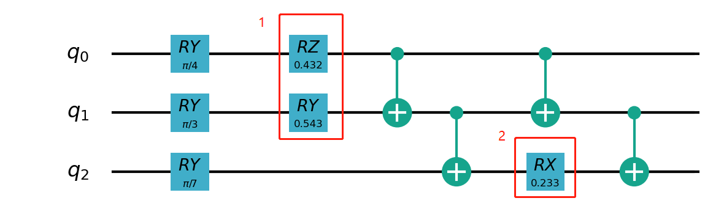
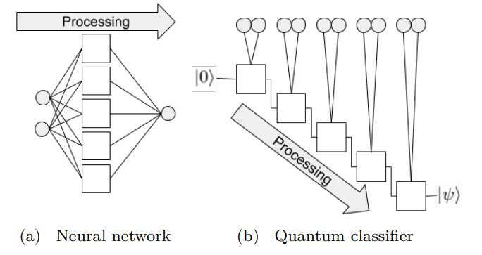
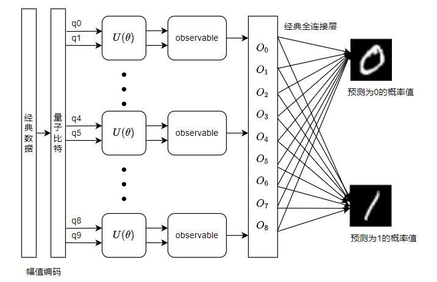
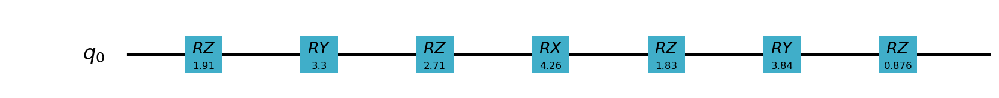
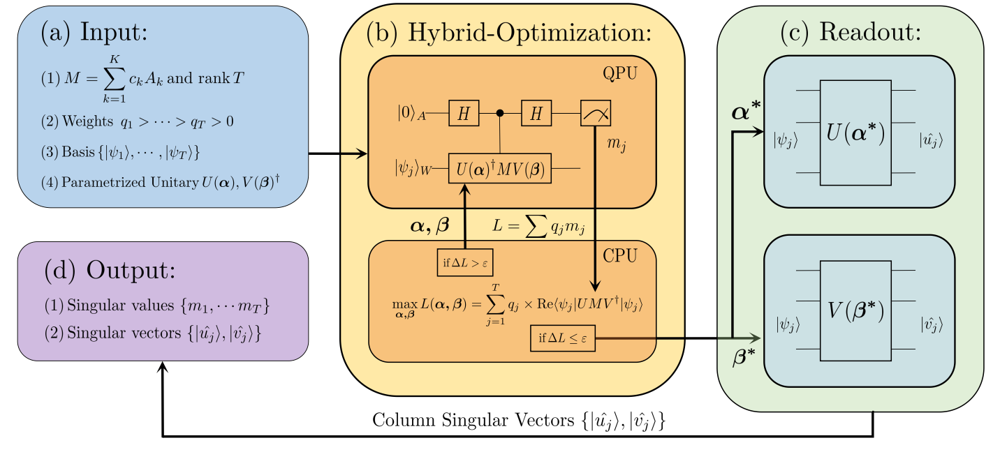
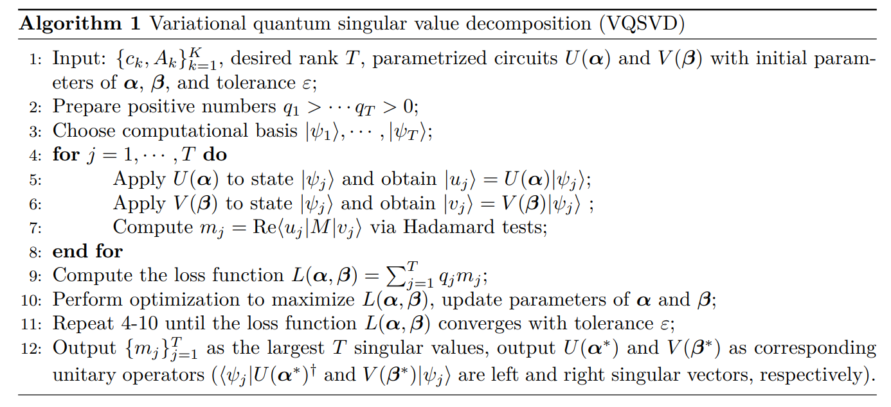

使用自动微分模拟的量子机器学习示例¶
下面的例子使用 pyvqnet.qnn.vqc 下的变分量子线路接口实现一些量子机器学习算法和示例。 pyvqnet.qnn.vqc 下的变分量子线路接口使用态矢来表示量子态在量子逻辑门下的演化,通过自动微分计算变分量子线路中的梯度。
请注意下例子中 pyvqnet.qnn.vqc.QMachine 的使用,该类存放了量子态矢的数据,当计算批量数据时候或者每次进行测量之后,必须进行 pyvqnet.qnn.vqc.QMachine.reset_states 重新初始化态矢数据到输入数据的batch_size大小。
pyvqnet.qnn.vqc 还提供了 MeasureAll,Probability,Samples 等测量接口。
此外, pyvqnet.qnn.vqc.QModule 为用户定义的计算自动微分量子线路模型需要继承的类,需要像经典神经网络模型一样,定义 __init__ 以及 forward 函数。
当模型最后的 QTensor 运行 backward 后,就能使用自动微分模拟计算出 QModule 中变分量子线路的参数梯度,并可以通过梯度下降法相关的优化器进行更新。
量子自然梯度接口示例¶
量子机器学习模型一般使用梯度下降法对可变量子逻辑线路中参数进行优化。经典梯度下降法公式如下:
本质上,每次迭代时候,我们将计算参数空间下,梯度下降最陡的方向作为参数变化的方向。 在空间中任何一个方向,在局部范围内下降的速度都不如负梯度方向快。 不同空间上,最速下降方向的推导是依赖于参数微分的范数——距离度量。距离度量在这里起着核心作用, 不同的度量会得到不同的最速下降方向。对于经典优化问题中参数所处的欧几里得空间,最速下降方向就是负梯度方向。 即使如此,在参数优化的每一步,由于损失函数随着参数的变化,其参数空间发生变换。使得找到另一个更优的距离范数成为可能。
量子自然梯度法 借鉴经典自然梯度法的概念 Amari (1998) , 我们改为将优化问题视为给定输入的可能输出值的概率分布(即,最大似然估计),则更好的方法是在分布 空间中执行梯度下降,它相对于参数化是无量纲和不变的. 因此,无论参数化如何,每个优化步骤总是会为每个参数选择最佳步长。 在量子机器学习任务中,量子态空间拥有一个独特的不变度量张量,称为 Fubini-Study 度量张量 \(g_{ij}\)。 该张量将量子线路参数空间中的最速下降转换为分布空间中的最速下降。 量子自然梯度的公式如下:
其中 \(g^{+}\) 是伪逆。
以下我们基于VQNet实现对一个量子变分线路参数进行量子自然梯度优化的例子,其中 wrapper_calculate_qng 是需要加到待计算量子自然梯度的模型的forward函数的装饰器。
通过 pyvqnet.qnn.vqc.QNG 的 量子自然梯度优化器,可对模型注册的 Parameter 类型的参数优化。
我们的目标是使如下的量子变分线路的期望最小,可见其中含有两层共3个量子含参逻辑门,第一层由0和1比特上的 RZ, RY 逻辑门构成,第二层由2比特上的RX 逻辑门构成。
{kind=link}
import sys
sys.path.insert(0, "../")
import numpy as np
import pyvqnet
from pyvqnet.qnn import vqc
from pyvqnet.qnn.vqc import wrapper_calculate_qng
from pyvqnet.tensor import QTensor
import matplotlib.pyplot as plt
class Hmodel(vqc.Module):
def __init__(self, num_wires, dtype,init_t):
super(Hmodel, self).__init__()
self._num_wires = num_wires
self._dtype = dtype
self.qm = vqc.QMachine(num_wires, dtype=dtype)
self.p = pyvqnet.nn.Parameter([4], dtype=pyvqnet.kfloat64)
self.p.init_from_tensor(init_t)
self.ma = vqc.MeasureAll(obs={"Y0":1})
@wrapper_calculate_qng
def forward(self, x, *args, **kwargs):
self.qm.reset_states(1)
vqc.ry(q_machine=self.qm, wires=0, params=np.pi / 4)
vqc.ry(q_machine=self.qm, wires=1, params=np.pi / 3)
vqc.ry(q_machine=self.qm, wires=2, params=np.pi / 7)
# V0(theta0, theta1): Parametrized layer 0
vqc.rz(q_machine=self.qm, wires=0, params=self.p[0])
vqc.rz(q_machine=self.qm, wires=1, params=self.p[1])
# W1: non-parametrized gates
vqc.cnot(q_machine=self.qm, wires=[0, 1])
vqc.cnot(q_machine=self.qm, wires=[1, 2])
# V_1(theta2, theta3): Parametrized layer 1
vqc.ry(q_machine=self.qm, params=self.p[2], wires=1)
vqc.rx(q_machine=self.qm, params=self.p[3], wires=2)
# W2: non-parametrized gates
vqc.cnot(q_machine=self.qm, wires=[0, 1])
vqc.cnot(q_machine=self.qm, wires=[1, 2])
return self.ma(q_machine=self.qm)
class Hmodel2(vqc.Module):
def __init__(self, num_wires, dtype,init_t):
super(Hmodel2, self).__init__()
self._num_wires = num_wires
self._dtype = dtype
self.qm = vqc.QMachine(num_wires, dtype=dtype)
self.p = pyvqnet.nn.Parameter([4], dtype=pyvqnet.kfloat64)
self.p.init_from_tensor(init_t)
self.ma = vqc.MeasureAll(obs={"Y0":1})
def forward(self, x, *args, **kwargs):
self.qm.reset_states(1)
vqc.ry(q_machine=self.qm, wires=0, params=np.pi / 4)
vqc.ry(q_machine=self.qm, wires=1, params=np.pi / 3)
vqc.ry(q_machine=self.qm, wires=2, params=np.pi / 7)
# V0(theta0, theta1): Parametrized layer 0
vqc.rz(q_machine=self.qm, wires=0, params=self.p[0])
vqc.rz(q_machine=self.qm, wires=1, params=self.p[1])
# W1: non-parametrized gates
vqc.cnot(q_machine=self.qm, wires=[0, 1])
vqc.cnot(q_machine=self.qm, wires=[1, 2])
# V_1(theta2, theta3): Parametrized layer 1
vqc.ry(q_machine=self.qm, params=self.p[2], wires=1)
vqc.rx(q_machine=self.qm, params=self.p[3], wires=2)
# W2: non-parametrized gates
vqc.cnot(q_machine=self.qm, wires=[0, 1])
vqc.cnot(q_machine=self.qm, wires=[1, 2])
return self.ma(q_machine=self.qm)
使用SGD经典梯度下降法作为基线比较两者在相同迭代次数下的损失值变化情况,可见使用量子自然梯度,该损失函数下降更快。
steps = range(200)
x = QTensor([0.432, -0.123, 0.543, 0.233],
dtype=pyvqnet.kfloat64)
qng_model = Hmodel(3, pyvqnet.kcomplex128,x)
qng = pyvqnet.qnn.vqc.QNG(qng_model, 0.01)
qng_cost = []
for s in steps:
qng.zero_grad()
qng.step(None)
yy = qng_model(None).to_numpy().reshape([1])
qng_cost.append(yy)
x = QTensor([0.432, -0.123, 0.543, 0.233],
requires_grad=True,
dtype=pyvqnet.kfloat64)
qng_model = Hmodel2(3, pyvqnet.kcomplex128,x)
sgd = pyvqnet.optim.SGD(qng_model.parameters(), lr=0.01)
sgd_cost = []
for s in steps:
sgd.zero_grad()
y = qng_model(None)
y.backward()
sgd.step()
sgd_cost.append(y.to_numpy().reshape([1]))
plt.style.use("seaborn")
plt.plot(qng_cost, "b", label="Quantum natural gradient descent")
plt.plot(sgd_cost, "g", label="Vanilla gradient descent")
plt.ylabel("Cost function value")
plt.xlabel("Optimization steps")
plt.legend()
plt.savefig('qng_new_compare.png')
{kind=link}
用于手写数字识别的量子核函数模型¶
下面的例子使用 pyvqnet.qnn.vqc 下的变分量子线路接口实现了论文 Quantum Advantage Seeker with Kernels (QuASK): a software framework to speed up the research in quantum machine learning 中的量子核函数,基于手写数字数据集来对量子核的性能进行评估。
本次实验基于crz、ZZFeatureMap逻辑门实现了量子核矩阵以及量子核映射中两种线路的设计。 算法输入数据为维度8*8的手写数字数据集, 通过PCA降维, 将输入的数据降维到相应的比特数的维度如2、4、8, 之后对数据进行标准化处理后, 获取训练数据集以及测试数据用于训练, 本次实现可分为两个, 分别为量子核矩阵以及核映射。 量子核矩阵由量子线路计算每一对数据的相似度,随后组成矩阵后输出； 量子核映射则分别计算两组数据映射后计算两组数据的相似度矩阵。
具体代码实现如下,需要额外安装 sklearn, scipy 等:
import numpy as np
from sklearn.svm import SVC
from sklearn import datasets
from sklearn.decomposition import PCA
from sklearn.preprocessing import StandardScaler, MinMaxScaler
from sklearn.model_selection import train_test_split
from sklearn.metrics import accuracy_score
from scipy.linalg import sqrtm
import matplotlib.pyplot as plt
from scipy.linalg import expm
import numpy.linalg as la
import sys
sys.path.insert(0, "../")
import pyvqnet
from pyvqnet import _core
from pyvqnet.dtype import *
from pyvqnet.tensor.tensor import QTensor
from pyvqnet.qnn.vqc.qcircuit import PauliZ, VQC_ZZFeatureMap,PauliX,PauliY,hadamard,crz,rz
from pyvqnet.qnn.vqc import QMachine
from pyvqnet.qnn.vqc.qmeasure import expval
from pyvqnet import tensor
import functools as ft
np.random.seed(42)
# data load
digits = datasets.load_digits(n_class=2)
# create lists to save the results
gaussian_accuracy = []
quantum_accuracy = []
projected_accuracy = []
quantum_gaussian = []
projected_gaussian = []
# reduce dimensionality
def custom_data_map_func(x):
"""
custom data map function
"""
coeff = x[0] if x.shape[0] == 1 else ft.reduce(lambda m, n: m * n, x)
return coeff
def vqnet_quantum_kernel(X_1, X_2=None):
if X_2 is None:
X_2 = X_1 # Training Gram matrix
assert (
X_1.shape[1] == X_2.shape[1]
), "The training and testing data must have the same dimensionality"
N = X_1.shape[1]
# create projector (measures probability of having all "00...0")
projector = np.zeros((2**N, 2**N))
projector[0, 0] = 1
projector = QTensor(projector,dtype=kcomplex128)
# define the circuit for the quantum kernel ("overlap test" circuit)
def kernel(x1, x2):
qm = QMachine(N, dtype=kcomplex128)
for i in range(N):
hadamard(q_machine=qm, wires=i)
rz(q_machine=qm,params=QTensor(2 * x1[i],dtype=kfloat64), wires=i)
for i in range(N):
for j in range(i + 1, N):
crz(q_machine=qm,params=QTensor(2 * (np.pi - x1[i]) * (np.pi - x1[j]),dtype=kfloat64), wires=[i, j])
for i in range(N):
for j in range(i + 1, N):
crz(q_machine=qm,params=QTensor(2 * (np.pi - x2[i]) * (np.pi - x2[j]),dtype=kfloat64), wires=[i, j],use_dagger=True)
for i in range(N):
rz(q_machine=qm,params=QTensor(2 * x2[i],dtype=kfloat64), wires=i,use_dagger=True)
hadamard(q_machine=qm, wires=i,use_dagger=True)
states_1 = qm.states.reshape((1,-1))
states_1 = tensor.conj(states_1)
states_2 = qm.states.reshape((-1,1))
result = tensor.matmul(tensor.conj(states_1), projector)
result = tensor.matmul(result, states_2)
return result.to_numpy()[0][0].real
gram = np.zeros(shape=(X_1.shape[0], X_2.shape[0]))
for i in range(len(X_1)):
for j in range(len(X_2)):
gram[i][j] = kernel(X_1[i], X_2[j])
return gram
def vqnet_projected_quantum_kernel(X_1, X_2=None, params=QTensor([1.0])):
if X_2 is None:
X_2 = X_1 # Training Gram matrix
assert (
X_1.shape[1] == X_2.shape[1]
), "The training and testing data must have the same dimensionality"
def projected_xyz_embedding(X):
"""
Create a Quantum Kernel given the template written in Pennylane framework
Args:
embedding: Pennylane template for the quantum feature map
X: feature data (matrix)
Returns:
projected quantum feature map X
"""
N = X.shape[1]
def proj_feature_map(x):
qm = QMachine(N, dtype=kcomplex128)
VQC_ZZFeatureMap(x, qm, data_map_func=custom_data_map_func, entanglement="linear")
return (
[expval(qm, i, PauliX()).to_numpy() for i in range(N)]
+ [expval(qm, i, PauliY()).to_numpy() for i in range(N)]
+ [expval(qm, i, PauliZ()).to_numpy() for i in range(N)]
)
# build the gram matrix
X_proj = [proj_feature_map(x) for x in X]
return X_proj
X_1_proj = projected_xyz_embedding(QTensor(X_1))
X_2_proj = projected_xyz_embedding(QTensor(X_2))
# print(X_1_proj)
# print(X_2_proj)
# build the gram matrix
gamma = params[0]
gram = tensor.zeros(shape=[X_1.shape[0], X_2.shape[0]],dtype=7)
for i in range(len(X_1_proj)):
for j in range(len(X_2_proj)):
result = [a - b for a,b in zip(X_1_proj[i], X_2_proj[j])]
result = [a**2 for a in result]
value = tensor.exp(-gamma * sum(result))
gram[i,j] = value
return gram
def calculate_generalization_accuracy(
training_gram, training_labels, testing_gram, testing_labels
):
svm = SVC(kernel="precomputed")
svm.fit(training_gram, training_labels)
y_predict = svm.predict(testing_gram)
correct = np.sum(testing_labels == y_predict)
accuracy = correct / len(testing_labels)
return accuracy
import time
qubits = [2, 4, 8]
for n in qubits:
n_qubits = n
x_tr, x_te , y_tr , y_te = train_test_split(digits.data, digits.target, test_size=0.3, random_state=22)
pca = PCA(n_components=n_qubits).fit(x_tr)
x_tr_reduced = pca.transform(x_tr)
x_te_reduced = pca.transform(x_te)
# normalize and scale
std = StandardScaler().fit(x_tr_reduced)
x_tr_norm = std.transform(x_tr_reduced)
x_te_norm = std.transform(x_te_reduced)
samples = np.append(x_tr_norm, x_te_norm, axis=0)
minmax = MinMaxScaler((-1,1)).fit(samples)
x_tr_norm = minmax.transform(x_tr_norm)
x_te_norm = minmax.transform(x_te_norm)
# select only 100 training and 20 test data
tr_size = 100
x_tr = x_tr_norm[:tr_size]
y_tr = y_tr[:tr_size]
te_size = 20
x_te = x_te_norm[:te_size]
y_te = y_te[:te_size]
quantum_kernel_tr = vqnet_quantum_kernel(X_1=x_tr)
projected_kernel_tr = vqnet_projected_quantum_kernel(X_1=x_tr)
quantum_kernel_te = vqnet_quantum_kernel(X_1=x_te, X_2=x_tr)
projected_kernel_te = vqnet_projected_quantum_kernel(X_1=x_te, X_2=x_tr)
quantum_accuracy.append(calculate_generalization_accuracy(quantum_kernel_tr, y_tr, quantum_kernel_te, y_te))
print(f"qubits {n}, quantum_accuracy {quantum_accuracy[-1]}")
projected_accuracy.append(calculate_generalization_accuracy(projected_kernel_tr.to_numpy(), y_tr, projected_kernel_te.to_numpy(), y_te))
print(f"qubits {n}, projected_accuracy {projected_accuracy[-1]}")
# train_size 100 test_size 20
#
# qubits 2, quantum_accuracy 1.0
# qubits 2, projected_accuracy 1.0
# qubits 4, quantum_accuracy 1.0
# qubits 4, projected_accuracy 1.0
# qubits 8, quantum_accuracy 0.45
# qubits 8, projected_accuracy 1.0
# train_size 100 test_size 100
#
# qubits 2, quantum_accuracy 1.0
# qubits 2, projected_accuracy 0.99
# qubits 4, quantum_accuracy 0.99
# qubits 4, projected_accuracy 0.98
# qubits 8, quantum_accuracy 0.51
# qubits 8, projected_accuracy 0.99
基于小样本的量子卷积神经网络模型¶
下面的例子使用2.0.8新加入的 pyvqnet.qnn.vqc 下的变分线路接口,实现了论文 Generalization in quantum machine learning from few training data 中的用于小样本的量子卷积神经网络模型。用于探讨量子机器学习模型中的泛化功能。
为了在量子电路中构建卷积层和池化层,我们将遵循论文中提出的 QCNN 结构。前一层将提取局部相关性,而后者允许降低特征向量的维度。在量子电路中,卷积层由沿着整个图像扫描的内核组成,是一个与相邻量子位相关的两个量子位酉。 至于池化层,我们将使用取决于相邻量子位测量的条件单量子位酉。最后,我们使用一个密集层,使用全对全单一门来纠缠最终状态的所有量子位,如下图所示:

参考这种量子卷积层的设计方式,我们基于IsingXX、IsingYY、IsingZZ三个量子逻辑门对量子线路进行了构建,如下图所示:

其中输入数据为维度8*8的手写数字数据集,通过数据编码层,经过第一层卷积,由IsingXX、IsingYY、IsingZZ、U3构成,,随后经过一层池化层,在0、2、5位量子比特上再经过一层卷积和一层池化,最后再经过一层Random Unitary,其中由15个随机酉矩阵构成,对应经典的Dense Layer,测量结果为对手写数据为0和1的预测概率,具体代码实现如下:
以下代码运行需要额外安装 pandas, sklearn, seaborn。 考虑到耗时情况下面相关运行配置常数设置较小，用户可自行设置较大值。
import matplotlib as mpl
import matplotlib.pyplot as plt
import numpy as np
import pandas as pd
from sklearn import datasets
import seaborn as sns
from pyqpanda import *
from pyvqnet.qnn.vqc.qcircuit import isingxx,isingyy,isingzz,u3,cnot,VQC_AmplitudeEmbedding,rxx,ryy,rzz,rzx
from pyvqnet.qnn.vqc.qmachine import QMachine
from pyvqnet.qnn.vqc.utils import probs
from pyvqnet.nn import Module, Parameter
from pyvqnet.tensor import tensor
from pyvqnet.tensor import QTensor
from pyvqnet.dtype import *
from pyvqnet.optim import Adam
sns.set()
seed = 0
rng = np.random.default_rng(seed=seed)
n_reps = 10
n_test = 10
n_epochs = 10
def convolutional_layer(qm, weights, wires, skip_first_layer=True):
n_wires = len(wires)
assert n_wires >= 3, "this circuit is too small!"
for p in [0, 1]:
for indx, w in enumerate(wires):
if indx % 2 == p and indx < n_wires - 1:
if indx % 2 == 0 and not skip_first_layer:
u3(q_machine=qm, wires=w, params=weights[:3])
u3(q_machine=qm, wires=wires[indx + 1], params=weights[3:6])
isingxx(q_machine=qm, wires=[w, wires[indx + 1]], params=weights[6])
isingyy(q_machine=qm, wires=[w, wires[indx + 1]], params=weights[7])
isingzz(q_machine=qm, wires=[w, wires[indx + 1]], params=weights[8])
u3(q_machine=qm, wires=w, params=weights[9:12])
u3(q_machine=qm, wires=wires[indx + 1], params=weights[12:])
return qm
def pooling_layer(qm, weights, wires):
"""Adds a pooling layer to a circuit."""
n_wires = len(wires)
assert len(wires) >= 2, "this circuit is too small!"
for indx, w in enumerate(wires):
if indx % 2 == 1 and indx < n_wires:
cnot(q_machine=qm, wires=[w, wires[indx - 1]])
u3(q_machine=qm, params=weights, wires=wires[indx - 1])
def conv_and_pooling(qm, kernel_weights, n_wires, skip_first_layer=True):
"""Apply both the convolutional and pooling layer."""
convolutional_layer(qm, kernel_weights[:15], n_wires, skip_first_layer=skip_first_layer)
pooling_layer(qm, kernel_weights[15:], n_wires)
return qm
def dense_layer(qm, weights, wires):
"""Apply an arbitrary unitary gate to a specified set of wires."""
rzz(q_machine=qm,params=weights[0], wires=wires)
rxx(q_machine=qm,params=weights[1], wires=wires)
ryy(q_machine=qm,params=weights[2], wires=wires)
rzx(q_machine=qm,params=weights[3], wires=wires)
rxx(q_machine=qm,params=weights[5], wires=wires)
rzx(q_machine=qm,params=weights[6], wires=wires)
rzz(q_machine=qm,params=weights[7], wires=wires)
ryy(q_machine=qm,params=weights[8], wires=wires)
rzz(q_machine=qm,params=weights[9], wires=wires)
rxx(q_machine=qm,params=weights[10], wires=wires)
rzx(q_machine=qm,params=weights[11], wires=wires)
rzx(q_machine=qm,params=weights[12], wires=wires)
rzz(q_machine=qm,params=weights[13], wires=wires)
ryy(q_machine=qm,params=weights[14], wires=wires)
return qm
num_wires = 6
def conv_net(qm, weights, last_layer_weights, features):
layers = weights.shape[1]
wires = list(range(num_wires))
VQC_AmplitudeEmbedding(input_feature = features, q_machine=qm)
# adds convolutional and pooling layers
for j in range(layers):
conv_and_pooling(qm, weights[:, j], wires, skip_first_layer=(not j == 0))
wires = wires[::2]
assert last_layer_weights.size == 4 ** (len(wires)) - 1, (
"The size of the last layer weights vector is incorrect!"
f" \n Expected {4 ** (len(wires)) - 1}, Given {last_layer_weights.size}"
)
dense_layer(qm, last_layer_weights, wires)
return probs(q_state=qm.states, num_wires=qm.num_wires, wires=[0])
def load_digits_data(num_train, num_test, rng):
"""Return training and testing data of digits dataset."""
digits = datasets.load_digits()
features, labels = digits.data, digits.target
# only use first two classes
features = features[np.where((labels == 0) | (labels == 1))]
labels = labels[np.where((labels == 0) | (labels == 1))]
# normalize data
features = features / np.linalg.norm(features, axis=1).reshape((-1, 1))
# subsample train and test split
train_indices = rng.choice(len(labels), num_train, replace=False)
test_indices = rng.choice(
np.setdiff1d(range(len(labels)), train_indices), num_test, replace=False
)
x_train, y_train = features[train_indices], labels[train_indices]
x_test, y_test = features[test_indices], labels[test_indices]
return x_train, y_train,x_test, y_test
class Qcnn_ising(Module):
def __init__(self):
super(Qcnn_ising, self).__init__()
self.conv = conv_net
self.qm = QMachine(num_wires,dtype=kcomplex128)
self.weights = Parameter((18, 2), dtype=7)
self.weights_last = Parameter((4 ** 2 -1,1), dtype=7)
def forward(self, input):
self.qm.reset_states(input.shape[0])
return self.conv(self.qm, self.weights, self.weights_last, input)
from tqdm import tqdm
def train_qcnn(n_train, n_test, n_epochs):
# load data
x_train, y_train, x_test, y_test = load_digits_data(n_train, n_test, rng)
# init weights and optimizer
model = Qcnn_ising()
opti = Adam(model.parameters(), lr=0.01)
# data containers
train_cost_epochs, test_cost_epochs, train_acc_epochs, test_acc_epochs = [], [], [], []
for step in range(n_epochs):
model.train()
opti.zero_grad()
result = model(QTensor(x_train))
train_cost = 1.0 - tensor.sums(result[tensor.arange(0, len(y_train)), y_train]) / len(y_train)
# print(f"step {step}, train_cost {train_cost}")
train_cost.backward()
opti.step()
train_cost_epochs.append(train_cost.to_numpy()[0])
# compute accuracy on training data
# print(tensor.sums(result[tensor.arange(0, len(y_train)), y_train] > 0.5))
train_acc = tensor.sums(result[tensor.arange(0, len(y_train)), y_train] > 0.5) / result.shape[0]
# print(train_acc)
# print(f"step {step}, train_acc {train_acc}")
train_acc_epochs.append(train_acc.to_numpy())
# compute accuracy and cost on testing data
test_out = model(QTensor(x_test))
test_acc = tensor.sums(test_out[tensor.arange(0, len(y_test)), y_test] > 0.5) / test_out.shape[0]
test_acc_epochs.append(test_acc.to_numpy())
test_cost = 1.0 - tensor.sums(test_out[tensor.arange(0, len(y_test)), y_test]) / len(y_test)
test_cost_epochs.append(test_cost.to_numpy()[0])
# print(f"step {step}, test_cost {test_cost}")
# print(f"step {step}, test_acc {test_acc}")
return dict(
n_train=[n_train] * n_epochs,
step=np.arange(1, n_epochs + 1, dtype=int),
train_cost=train_cost_epochs,
train_acc=train_acc_epochs,
test_cost=test_cost_epochs,
test_acc=test_acc_epochs,
)
def run_iterations(n_train):
results_df = pd.DataFrame(
columns=["train_acc", "train_cost", "test_acc", "test_cost", "step", "n_train"]
)
for _ in tqdm(range(n_reps)):
results = train_qcnn(n_train=n_train, n_test=n_test, n_epochs=n_epochs)
results_df = pd.concat(
[results_df, pd.DataFrame.from_dict(results)], axis=0, ignore_index=True
)
return results_df
# run training for multiple sizes
train_sizes = [2, 5, 10, 20, 40, 80]
results_df = run_iterations(n_train=2)
for n_train in train_sizes[1:]:
results_df = pd.concat([results_df, run_iterations(n_train=n_train)])
save = 0 # 保存数据
draw = 0 # 绘图
if save:
results_df.to_csv('test_qcnn.csv', index=False)
import pickle
if draw:
# aggregate dataframe
results_df = pd.read_csv('test_qcnn.csv')
df_agg = results_df.groupby(["n_train", "step"]).agg(["mean", "std"])
df_agg = df_agg.reset_index()
sns.set_style('whitegrid')
colors = sns.color_palette()
fig, axes = plt.subplots(ncols=3, figsize=(16.5, 5))
generalization_errors = []
# plot losses and accuracies
for i, n_train in enumerate(train_sizes):
df = df_agg[df_agg.n_train == n_train]
dfs = [df.train_cost["mean"], df.test_cost["mean"], df.train_acc["mean"], df.test_acc["mean"]]
lines = ["o-", "x--", "o-", "x--"]
labels = [fr"$N={n_train}$", None, fr"$N={n_train}$", None]
axs = [0, 0, 2, 2]
for k in range(4):
ax = axes[axs[k]]
ax.plot(df.step, dfs[k], lines[k], label=labels[k], markevery=10, color=colors[i], alpha=0.8)
# plot final loss difference
dif = df[df.step == 100].test_cost["mean"] - df[df.step == 100].train_cost["mean"]
generalization_errors.append(dif)
# format loss plot
ax = axes[0]
ax.set_title('Train and Test Losses', fontsize=14)
ax.set_xlabel('Epoch')
ax.set_ylabel('Loss')
# format generalization error plot
ax = axes[1]
ax.plot(train_sizes, generalization_errors, "o-", label=r"$gen(\alpha)$")
ax.set_xscale('log')
ax.set_xticks(train_sizes)
ax.set_xticklabels(train_sizes)
ax.set_title(r'Generalization Error $gen(\alpha) = R(\alpha) - \hat{R}_N(\alpha)$', fontsize=14)
ax.set_xlabel('Training Set Size')
# format loss plot
ax = axes[2]
ax.set_title('Train and Test Accuracies', fontsize=14)
ax.set_xlabel('Epoch')
ax.set_ylabel('Accuracy')
ax.set_ylim(0.5, 1.05)
legend_elements = [
mpl.lines.Line2D([0], [0], label=f'N={n}', color=colors[i]) for i, n in enumerate(train_sizes)
] + [
mpl.lines.Line2D([0], [0], marker='o', ls='-', label='Train', color='Black'),
mpl.lines.Line2D([0], [0], marker='x', ls='--', label='Test', color='Black')
]
axes[0].legend(handles=legend_elements, ncol=3)
axes[2].legend(handles=legend_elements, ncol=3)
axes[1].set_yscale('log', base=2)
plt.show()
使用 n_reps = 100, n_test = 100, n_epochs = 100 配置运行后的实验结果如下图所示:

混合量子经典神经网络的HQCNN示例¶
使用 pyvqnet.qnn.vqc 实现了HQCNN示例,使用量子经典混合网络进行Mnist数据集上图像分类。量子部分,这里定义了一个1量子比特的简单量子线路,该线路将经典神经网络层的输出作为输入,通过 H, RY 逻辑门进行量子数据编码,并计算z方向的哈密顿期望值作为输出。
{kind=link}
由于量子线路可以和经典神经网络一起进行自动微分的计算,因此我们可以使用VQNet的2维卷积层 Conv2D ,池化层 MaxPool2D ,全连接层 Linear 以及刚才构建的量子线路构建模型。
通过以下代码中继承于VQNet自动微分模块 Module 的 Net 以及 Hybrid 类的定义,以及模型前传函数 forward() 中对数据前向计算的定义,我们构建了一个可以自动微分的模型
将本例中MNIST的数据进行卷积,降维,量子编码,测量,获取分类任务所需的最终特征。
以下首先为神经网络相关代码:
import sys
sys.path.insert(0,"../")
import time
import os
import struct
import gzip
from pyvqnet.nn.module import Module
from pyvqnet.nn.linear import Linear
from pyvqnet.nn.conv import Conv2D
from pyvqnet.nn import activation as F
from pyvqnet.nn.pooling import MaxPool2D
from pyvqnet.nn.loss import CategoricalCrossEntropy
from pyvqnet.optim.adam import Adam
from pyvqnet.data.data import data_generator
from pyvqnet.tensor import tensor
from pyvqnet.qnn.vqc import QMachine,QModule,hadamard,ry,MeasureAll
import numpy as np
import matplotlib.pyplot as plt
import matplotlib
try:
matplotlib.use("TkAgg")
except:
print("Can not use matplot TkAgg")
pass
try:
import urllib.request
except ImportError:
raise ImportError("You should use Python 3.x")
class Hybird(QModule):
def __init__(self):
#this super(Hybird, self).__init__() is need
super(Hybird, self).__init__()
self.measure = MeasureAll(obs={"Z0":1})
#use only one qubit to create a qmachine
self.qm = QMachine(1)
def forward(self,x):
#this reset_states must be done to get real batch size.
self.qm.reset_states(x.shape[0])
hadamard(self.qm,[0])
ry(self.qm,[0],x)
return self.measure(q_machine=self.qm)
class Net(Module):
"""
Hybird Quantum Classci Neural Network Module
"""
def __init__(self):
super(Net, self).__init__()
self.conv1 = Conv2D(input_channels=1,
output_channels=6,
kernel_size=(5, 5),
stride=(1, 1),
padding="valid")
self.maxpool1 = MaxPool2D([2, 2], [2, 2], padding="valid")
self.conv2 = Conv2D(input_channels=6,
output_channels=16,
kernel_size=(5, 5),
stride=(1, 1),
padding="valid")
self.maxpool2 = MaxPool2D([2, 2], [2, 2], padding="valid")
self.fc1 = Linear(input_channels=256, output_channels=64)
self.fc2 = Linear(input_channels=64, output_channels=1)
self.hybird = Hybird()
self.fc3 = Linear(input_channels=1, output_channels=2)
def forward(self, x):
start_time_forward = time.time()
x = F.ReLu()(self.conv1(x))
x = self.maxpool1(x)
x = F.ReLu()(self.conv2(x))
x = self.maxpool2(x)
x = tensor.flatten(x, 1)
x = F.ReLu()(self.fc1(x))
x = self.fc2(x)
x = self.hybird(x)
x = self.fc3(x)
return x
以下为数据载入,训练代码等:
url_base = 'https://ossci-datasets.s3.amazonaws.com/mnist/'
key_file = {
"train_img": "train-images-idx3-ubyte.gz",
"train_label": "train-labels-idx1-ubyte.gz",
"test_img": "t10k-images-idx3-ubyte.gz",
"test_label": "t10k-labels-idx1-ubyte.gz"
}
def _download(dataset_dir, file_name):
"""
Download mnist data if needed.
"""
file_path = dataset_dir + "/" + file_name
if os.path.exists(file_path):
with gzip.GzipFile(file_path) as file:
file_path_ungz = file_path[:-3].replace("\\", "/")
if not os.path.exists(file_path_ungz):
open(file_path_ungz, "wb").write(file.read())
return
print("Downloading " + file_name + " ... ")
urllib.request.urlretrieve(url_base + file_name, file_path)
if os.path.exists(file_path):
with gzip.GzipFile(file_path) as file:
file_path_ungz = file_path[:-3].replace("\\", "/")
file_path_ungz = file_path_ungz.replace("-idx", ".idx")
if not os.path.exists(file_path_ungz):
open(file_path_ungz, "wb").write(file.read())
print("Done")
def download_mnist(dataset_dir):
for v in key_file.values():
_download(dataset_dir, v)
def load_mnist(dataset="training_data", digits=np.arange(2), path="./examples"):
"""
load mnist data
"""
from array import array as pyarray
download_mnist(path)
if dataset == "training_data":
fname_image = os.path.join(path, "train-images.idx3-ubyte").replace(
"\\", "/")
fname_label = os.path.join(path, "train-labels.idx1-ubyte").replace(
"\\", "/")
elif dataset == "testing_data":
fname_image = os.path.join(path, "t10k-images.idx3-ubyte").replace(
"\\", "/")
fname_label = os.path.join(path, "t10k-labels.idx1-ubyte").replace(
"\\", "/")
else:
raise ValueError("dataset must be 'training_data' or 'testing_data'")
flbl = open(fname_label, "rb")
_, size = struct.unpack(">II", flbl.read(8))
lbl = pyarray("b", flbl.read())
flbl.close()
fimg = open(fname_image, "rb")
_, size, rows, cols = struct.unpack(">IIII", fimg.read(16))
img = pyarray("B", fimg.read())
fimg.close()
ind = [k for k in range(size) if lbl[k] in digits]
num = len(ind)
images = np.zeros((num, rows, cols))
labels = np.zeros((num, 1), dtype=int)
for i in range(len(ind)):
images[i] = np.array(img[ind[i] * rows * cols:(ind[i] + 1) * rows *
cols]).reshape((rows, cols))
labels[i] = lbl[ind[i]]
return images, labels
def data_select(train_num, test_num):
"""
Select data from mnist dataset.
"""
x_train, y_train = load_mnist("training_data") # 下载训练数据
x_test, y_test = load_mnist("testing_data")
idx_train = np.append(
np.where(y_train == 0)[0][:train_num],
np.where(y_train == 1)[0][:train_num])
x_train = x_train[idx_train]
y_train = y_train[idx_train]
x_train = x_train / 255
y_train = np.eye(2)[y_train].reshape(-1, 2)
# Test Leaving only labels 0 and 1
idx_test = np.append(
np.where(y_test == 0)[0][:test_num],
np.where(y_test == 1)[0][:test_num])
x_test = x_test[idx_test]
y_test = y_test[idx_test]
x_test = x_test / 255
y_test = np.eye(2)[y_test].reshape(-1, 2)
return x_train, y_train, x_test, y_test
def run():
"""
Run mnist train function
"""
x_train, y_train, x_test, y_test = data_select(100, 50)
model = Net()
optimizer = Adam(model.parameters(), lr=0.005)
loss_func = CategoricalCrossEntropy()
epochs = 10
train_loss_list = []
val_loss_list = []
train_acc_list = []
val_acc_list = []
model.train()
for epoch in range(1, epochs):
total_loss = []
model.train()
batch_size = 3
correct = 0
n_train = 0
for x, y in data_generator(x_train,
y_train,
batch_size=batch_size,
shuffle=True):
x = x.reshape(-1, 1, 28, 28)
optimizer.zero_grad()
output = model(x)
loss = loss_func(y, output)
loss_np = np.array(loss.data)
np_output = np.array(output.data, copy=False)
mask = (np_output.argmax(1) == y.argmax(1))
correct += np.sum(np.array(mask))
n_train += batch_size
loss.backward()
optimizer._step()
total_loss.append(loss_np)
train_loss_list.append(np.sum(total_loss) / len(total_loss))
train_acc_list.append(np.sum(correct) / n_train)
print("{:.0f} loss is : {:.10f}".format(epoch, train_loss_list[-1]))
model.eval()
correct = 0
n_eval = 0
for x, y in data_generator(x_test, y_test, batch_size=1, shuffle=True):
x = x.reshape(-1, 1, 28, 28)
output = model(x)
loss = loss_func(y, output)
loss_np = np.array(loss.data)
np_output = np.array(output.data, copy=False)
mask = (np_output.argmax(1) == y.argmax(1))
correct += np.sum(np.array(mask))
n_eval += 1
total_loss.append(loss_np)
print(f"Eval Accuracy: {correct / n_eval}")
val_loss_list.append(np.sum(total_loss) / len(total_loss))
val_acc_list.append(np.sum(correct) / n_eval)
if __name__ == "__main__":
run()
"""
1 loss is : 0.6849292357
Eval Accuracy: 0.5
2 loss is : 0.4714432901
Eval Accuracy: 1.0
3 loss is : 0.2898814073
Eval Accuracy: 1.0
4 loss is : 0.1938255936
Eval Accuracy: 1.0
5 loss is : 0.1351640474
Eval Accuracy: 1.0
6 loss is : 0.0998594583
Eval Accuracy: 1.0
7 loss is : 0.0778947517
Eval Accuracy: 1.0
8 loss is : 0.0627411657
Eval Accuracy: 1.0
9 loss is : 0.0519049061
Eval Accuracy: 1.0
"""
量子重载入算法示例¶
以下使用 pyvqnet.qnn.vqc 下的接口构建quantum data re-uploading算法示例。
在神经网络中,每一个神经元都接受来自上层所有神经元的信息(图a)。与之相对的,单比特量子分类器接受上一个的信息处理单元和输入(图b)。
通俗地来说,对于传统的量子线路来说,当数据上传完成,可以直接通过若干幺正变换 \(U(\theta_1,\theta_2,\theta_3)\) 直接得到结果。
但是在量子数据重上传(Quantum Data Re-upLoading,QDRL)任务中,数据在幺正变换之前需要进行重新上传操作。
QDRL与经典神经网络原理图对比
{kind=link}
导入库以及定义量子神经网络模型:
import sys
sys.path.insert(0, "../")
import numpy as np
from pyvqnet.nn.linear import Linear
from pyvqnet.qnn.vqc import QMachine,QModule,rz,ry,Probability
from pyvqnet.nn import Parameter
from pyvqnet.optim import sgd
from pyvqnet.nn.loss import CategoricalCrossEntropy
from pyvqnet.tensor.tensor import QTensor
from pyvqnet.nn.module import Module
import matplotlib.pyplot as plt
import matplotlib
from pyvqnet.data import data_generator as get_minibatch_data
try:
matplotlib.use("TkAgg")
except:
print("Can not use matplot TkAgg")
pass
np.random.seed(42)
class vmodel(QModule):
def __init__(self,nq):
super(vmodel,self).__init__()
self.qm = QMachine(1)
self.nq = nq
self.w = Parameter((9,))
self.ma = Probability(wires=range(nq))
def forward(self,x):
self.qm.reset_states(x.shape[0])
qm = self.qm
w = self.w
rz(qm,0, x[:,[0]])
ry(qm,0, x[:,[1]])
rz(qm,0, x[:,[2]])
rz(qm,0, w[0])
ry(qm,0, w[1])
rz(qm,0, w[2])
rz(qm,0, x[:,[0]])
ry(qm,0, x[:,[1]])
rz(qm,0, x[:,[2]])
rz(qm,0, w[3])
ry(qm,0, w[4])
rz(qm,0, w[5])
rz(qm,0, x[:,[0]])
ry(qm,0, x[:,[1]])
rz(qm,0, x[:,[2]])
rz(qm,0, w[6])
ry(qm,0, w[7])
rz(qm,0, w[8])
return self.ma(qm)
class Model(Module):
def __init__(self):
super(Model, self).__init__()
self.pqc = vmodel(1)
self.fc2 = Linear(2, 2)
def forward(self, x):
x = self.pqc(x)
return x
定义数据载入,模型训练的相关代码:
def circle(samples: int, reps=np.sqrt(1 / 2)):
data_x, data_y = [], []
for _ in range(samples):
x = np.random.rand(2)
y = [0, 1]
if np.linalg.norm(x) < reps:
y = [1, 0]
data_x.append(x)
data_y.append(y)
return np.array(data_x), np.array(data_y)
def plot_data(x, y, fig=None, ax=None):
if fig is None:
fig, ax = plt.subplots(1, 1, figsize=(5, 5))
reds = y == 0
blues = y == 1
ax.scatter(x[reds, 0], x[reds, 1], c="red", s=20, edgecolor="k")
ax.scatter(x[blues, 0], x[blues, 1], c="blue", s=20, edgecolor="k")
ax.set_xlabel("$x_1$")
ax.set_ylabel("$x_2$")
def get_score(pred, label):
pred, label = np.array(pred.data), np.array(label.data)
score = np.sum(np.argmax(pred, axis=1) == np.argmax(label, 1))
return score
model = Model()
optimizer = sgd.SGD(model.parameters(), lr=1)
def train():
"""
Main function for train qdrl model
"""
batch_size = 5
model.train()
x_train, y_train = circle(500)
x_train = np.hstack((x_train, np.ones((x_train.shape[0], 1)))) # 500*3
epoch = 10
print("start training...........")
for i in range(epoch):
accuracy = 0
count = 0
loss = 0
for data, label in get_minibatch_data(x_train, y_train, batch_size):
optimizer.zero_grad()
data, label = QTensor(data), QTensor(label)
output = model(data)
loss_fun = CategoricalCrossEntropy()
losss = loss_fun(label, output)
losss.backward()
optimizer._step()
accuracy += get_score(output, label)
loss += losss.item()
count += batch_size
print(f"epoch:{i}, train_accuracy_for_each_batch:{accuracy/count}")
print(f"epoch:{i}, train_loss_for_each_batch:{loss/count}")
def test():
batch_size = 5
model.eval()
print("start eval...................")
x_test, y_test = circle(500)
test_accuracy = 0
count = 0
x_test = np.hstack((x_test, np.ones((x_test.shape[0], 1))))
for test_data, test_label in get_minibatch_data(x_test, y_test,
batch_size):
test_data, test_label = QTensor(test_data), QTensor(test_label)
output = model(test_data)
test_accuracy += get_score(output, test_label)
count += batch_size
print(f"test_accuracy:{test_accuracy/count}")
if __name__ == "__main__":
train()
test()
"""
start training...........
epoch:0, train_accuracy_for_each_batch:0.828
epoch:0, train_loss_for_each_batch:0.10570884662866592
epoch:1, train_accuracy_for_each_batch:0.866
epoch:1, train_loss_for_each_batch:0.09770179575681687
epoch:2, train_accuracy_for_each_batch:0.878
epoch:2, train_loss_for_each_batch:0.09732778465747834
epoch:3, train_accuracy_for_each_batch:0.86
epoch:3, train_loss_for_each_batch:0.09763735890388489
epoch:4, train_accuracy_for_each_batch:0.864
epoch:4, train_loss_for_each_batch:0.09772944855690002
epoch:5, train_accuracy_for_each_batch:0.848
epoch:5, train_loss_for_each_batch:0.098575089097023
epoch:6, train_accuracy_for_each_batch:0.878
epoch:6, train_loss_for_each_batch:0.09734477716684341
epoch:7, train_accuracy_for_each_batch:0.878
epoch:7, train_loss_for_each_batch:0.09644640237092972
epoch:8, train_accuracy_for_each_batch:0.864
epoch:8, train_loss_for_each_batch:0.09722568172216416
epoch:9, train_accuracy_for_each_batch:0.862
epoch:9, train_loss_for_each_batch:0.09842782151699066
start eval...................
test_accuracy:0.934
"""
Circuit-centric quantum classifiers算法示例¶
这个例子使用 pyvqnet.qnn.vqc 实现了论文 Circuit-centric quantum classifiers 中可变量子线路进行二分类任务。
该例子用来判断一个二进制数是奇数还是偶数。通过将二进制数编码到量子比特上,通过优化线路中的可变参数,使得该线路z方向测量值可以指示该输入为奇数还是偶数。
变分量子线路通常定义一个子线路,这是一种基本的电路架构,可以通过重复层构建复杂变分电路。
我们的电路层由多个旋转逻辑门以及将每个量子位与其相邻的量子位纠缠在一起的 CNOT 逻辑门组成。
我们还需要一个线路将经典数据编码到量子态上,使得线路测量的输出与输入有关联。
本例中,我们把二进制输入编码到对应顺序的量子比特上。例如输入数据1101被编码到4个量子比特。
import sys
sys.path.insert(0, "../")
import random
import numpy as np
from pyvqnet.optim import sgd
from pyvqnet.tensor.tensor import QTensor
from pyvqnet.dtype import kfloat32,kint64
from pyvqnet.qnn.vqc import QMachine, RX, RY, CNOT, PauliX, qmatrix, PauliZ,qmeasure,qcircuit,VQC_RotCircuit
from pyvqnet.tensor import QTensor, tensor
import pyvqnet
from pyvqnet.nn import Parameter
random.seed(1234)
class QModel(pyvqnet.nn.Module):
def __init__(self, num_wires, dtype):
super(QModel, self).__init__()
self._num_wires = num_wires
self._dtype = dtype
self.qm = QMachine(num_wires, dtype=dtype)
self.w = Parameter((2,4,3),initializer=pyvqnet.utils.initializer.quantum_uniform)
self.cnot = CNOT(wires=[0, 1])
def forward(self, x, *args, **kwargs):
self.qm.reset_states(x.shape[0])
def get_cnot(nqubits,qm):
for i in range(len(nqubits) - 1):
CNOT(wires = [nqubits[i], nqubits[i + 1]])(q_machine = qm)
CNOT(wires = [nqubits[len(nqubits) - 1], nqubits[0]])(q_machine = qm)
def build_circult(weights, xx, nqubits,qm):
def Rot(weights_j, nqubits,qm):
VQC_RotCircuit(qm,nqubits,weights_j)
def basisstate(qm,xx, nqubits):
for i in nqubits:
qcircuit.rz(q_machine=qm, wires=i, params=xx[:,[i]])
qcircuit.ry(q_machine=qm, wires=i, params=xx[:,[i]])
qcircuit.rz(q_machine=qm, wires=i, params=xx[:,[i]])
basisstate(qm,xx,nqubits)
for i in range(weights.shape[0]):
weights_i = weights[i, :, :]
for j in range(len(nqubits)):
weights_j = weights_i[j]
Rot(weights_j, nqubits[j],qm)
get_cnot(nqubits,qm)
build_circult(self.w, x,range(4),self.qm)
return qmeasure.MeasureAll(obs={'Z0': 1})(self.qm)
数据载入,模型训练流程的代码:
qvc_train_data = [
0, 1, 0, 0, 1, 0, 1, 0, 1, 0, 0, 1, 1, 0, 0, 0, 1, 1, 1, 1, 1, 0, 0, 0, 1,
1, 0, 0, 1, 0, 1, 0, 1, 0, 0, 1, 0, 1, 1, 1, 1, 1, 0, 0, 0, 1, 1, 0, 1, 1,
1, 1, 1, 0, 1, 1, 1, 1, 1, 0
]
qvc_test_data = [0, 0, 0, 0, 0, 0, 0, 0, 1, 1, 0, 0, 1, 0, 1, 0, 0, 1, 1, 0]
batch_size = 5
def dataloader(data, label, batch_size, shuffle=True) -> np:
if shuffle:
for _ in range(len(data) // batch_size):
random_index = np.random.randint(0, len(data), (batch_size, 1))
yield data[random_index].reshape(batch_size,
-1), label[random_index].reshape(
batch_size, -1)
else:
for i in range(0, len(data) - batch_size + 1, batch_size):
yield data[i:i + batch_size], label[i:i + batch_size]
def get_accuary(result, label):
result, label = np.array(result.data), np.array(label.data)
score = np.sum(np.argmax(result, axis=1) == np.argmax(label, 1))
return score
def vqc_get_data(dataset_str):
"""
Tranform data to valid form
"""
if dataset_str == "train":
datasets = np.array(qvc_train_data)
else:
datasets = np.array(qvc_test_data)
datasets = datasets.reshape([-1, 5])
data = datasets[:, :-1]
label = datasets[:, -1].astype(int)
label = label.reshape(-1, 1)
return data, label
def vqc_square_loss(labels, predictions):
loss = 0
loss = (labels - predictions) ** 2
loss = tensor.mean(loss,axis=0)
return loss
def run2():
"""
Main run function
"""
model = QModel(4,pyvqnet.kcomplex64)
optimizer = sgd.SGD(model.parameters(), lr=0.5)
epoch = 25
#loss = CategoricalCrossEntropy()
print("start training..............")
model.train()
datas, labels = vqc_get_data("train")
for i in range(epoch):
sum_loss = 0
count =0
accuary = 0
for data, label in dataloader(datas, labels, batch_size, False):
optimizer.zero_grad()
data, label = QTensor(data,dtype=kfloat32), QTensor(label,dtype=kint64)
result = model(data)
loss_b = vqc_square_loss(label, result)
loss_b.backward()
optimizer._step()
sum_loss += loss_b.item()
count += batch_size
accuary += get_accuary(result, label)
print(
f"epoch:{i}, #### loss:{sum_loss/count} #####accuray:{accuary/count}"
)
run2()
"""
epoch:0, #### loss:0.07805998176336289 #####accuray:1.0
epoch:1, #### loss:0.07268960326910019 #####accuray:1.0
epoch:2, #### loss:0.06934810429811478 #####accuray:1.0
epoch:3, #### loss:0.06652230024337769 #####accuray:1.0
epoch:4, #### loss:0.06363258957862854 #####accuray:1.0
epoch:5, #### loss:0.0604777917265892 #####accuray:1.0
epoch:6, #### loss:0.05711844265460968 #####accuray:1.0
epoch:7, #### loss:0.053814482688903806 #####accuray:1.0
epoch:8, #### loss:0.05088095813989639 #####accuray:1.0
epoch:9, #### loss:0.04851257503032684 #####accuray:1.0
epoch:10, #### loss:0.04672074168920517 #####accuray:1.0
epoch:11, #### loss:0.04540069997310638 #####accuray:1.0
epoch:12, #### loss:0.04442296177148819 #####accuray:1.0
epoch:13, #### loss:0.04368099868297577 #####accuray:1.0
epoch:14, #### loss:0.04310029000043869 #####accuray:1.0
epoch:15, #### loss:0.04263183027505875 #####accuray:1.0
epoch:16, #### loss:0.04224379360675812 #####accuray:1.0
epoch:17, #### loss:0.041915199160575865 #####accuray:1.0
epoch:18, #### loss:0.04163179695606232 #####accuray:1.0
epoch:19, #### loss:0.041383542120456696 #####accuray:1.0
epoch:20, #### loss:0.0411631852388382 #####accuray:1.0
epoch:21, #### loss:0.04096531867980957 #####accuray:1.0
epoch:22, #### loss:0.04078584611415863 #####accuray:1.0
epoch:23, #### loss:0.0406215637922287 #####accuray:1.0
epoch:24, #### loss:0.040470016002655027 #####accuray:1.0
"""
量子经典迁移学习的示例¶
可以将称为迁移学习的机器学习方法应用于基于混合经典量子网络的图像分类器。基于VQNet的 pyvqnet.qnn.vqc 接口,我们实现以下代码示例。
迁移学习是一种成熟的人工神经网络训练技术,它基于一般直觉,即如果预训练的网络擅长解决给定的问题,那么,只需一些额外的训练,它也可以用来解决一个不同但相关的问题。
下面首先使用经典神经网络CNN训练一个分类模型,然后将部分层参数冻结,加入一个变分量子线路构成量子经典混合神经网络进行迁移学习模型训练。
import os
import os.path
import gzip
import struct
import numpy as np
import sys
sys.path.insert(0,"../")
from pyvqnet.nn.module import Module
from pyvqnet.nn.linear import Linear
from pyvqnet.nn.conv import Conv2D
from pyvqnet.utils.storage import load_parameters, save_parameters
from pyvqnet.nn import activation as F
from pyvqnet.nn.pooling import MaxPool2D
from pyvqnet.nn.loss import SoftmaxCrossEntropy
from pyvqnet.optim.sgd import SGD
from pyvqnet.optim.adam import Adam
from pyvqnet.data.data import data_generator
from pyvqnet.tensor import tensor
from pyvqnet.tensor.tensor import QTensor
from pyvqnet.qnn.vqc import hadamard,QMachine,QModule,ry,cnot,MeasureAll
from pyvqnet.nn import Parameter
import matplotlib.pyplot as plt
import matplotlib
try:
matplotlib.use("TkAgg")
except:
print("Can not use matplot TkAgg")
pass
try:
import urllib.request
except ImportError:
raise ImportError("You should use Python 3.x")
train_size = 50
eval_size = 2
EPOCHES = 3
n_qubits = 4 # Number of qubits
q_depth = 6 # Depth of the quantum circuit (number of variational layers)
def q_h_vqc(qm, qubits):
nq = len(qubits)
for idx in range(nq):
hadamard(qm,qubits[idx])# to get shape of (batch,1) for ry
def q_ry_embed_vqc(qm,param,qubits):
nq = len(qubits)
for idx in range(nq):
ry(qm,idx,param[:,[idx]])
def q_ry_param_vqc(qm,param,qubits):
nq = len(qubits)
for idx in range(nq):
ry(qm,idx,param[idx])
def q_entangling_vqc(qm,qubits):
nqubits = len(qubits)
for i in range(0, nqubits - 1,2): # Loop over even indices: i=0,2,...N-2
cnot(qm,[qubits[i], qubits[i + 1]])
for i in range(1, nqubits - 1,
2): # Loop over odd indices: i=1,3,...N-3
cnot(qm,[qubits[i], qubits[i + 1]])
def vqc_quantum_net(qm,q_input_features, q_weights_flat, qubits):
q_weights = q_weights_flat.reshape([q_depth, n_qubits])
q_h_vqc(qm,qubits)
q_ry_embed_vqc(qm,q_input_features,qubits)
for k in range(q_depth):
q_entangling_vqc(qm,qubits)
q_ry_param_vqc(qm, q_weights[k],qubits)
class QNet(QModule):
def __init__(self,nq):
super(QNet,self).__init__()
self.qm = QMachine(nq)
self.nq =nq
self.w = Parameter((q_depth * n_qubits,))
pauli_str_list =[]
for position in range(nq):
pauli_str = {"Z" + str(position): 1.0}
pauli_str_list.append(pauli_str)
self.ma = MeasureAll(obs=pauli_str_list)
def forward(self,x):
self.qm.reset_states(x.shape[0])#you have to expand states to input batchsize!
vqc_quantum_net(self.qm, x, self.w, range(self.nq))
return self.ma(self.qm)
数据载入:
url_base = 'https://ossci-datasets.s3.amazonaws.com/mnist/'
key_file = {
"train_img": "train-images-idx3-ubyte.gz",
"train_label": "train-labels-idx1-ubyte.gz",
"test_img": "t10k-images-idx3-ubyte.gz",
"test_label": "t10k-labels-idx1-ubyte.gz"
}
def _download(dataset_dir, file_name):
"""
Download dataset
"""
file_path = dataset_dir + "/" + file_name
if os.path.exists(file_path):
with gzip.GzipFile(file_path) as file:
file_path_ungz = file_path[:-3].replace("\\", "/")
if not os.path.exists(file_path_ungz):
open(file_path_ungz, "wb").write(file.read())
return
print("Downloading " + file_name + " ... ")
urllib.request.urlretrieve(url_base + file_name, file_path)
if os.path.exists(file_path):
with gzip.GzipFile(file_path) as file:
file_path_ungz = file_path[:-3].replace("\\", "/")
file_path_ungz = file_path_ungz.replace("-idx", ".idx")
if not os.path.exists(file_path_ungz):
open(file_path_ungz, "wb").write(file.read())
print("Done")
def download_mnist(dataset_dir):
for v in key_file.values():
_download(dataset_dir, v)
if not os.path.exists("./result"):
os.makedirs("./result")
else:
pass
def load_mnist(dataset="training_data",
digits=np.arange(2),
path="examples"):
"""
Load mnist data
"""
from array import array as pyarray
download_mnist(path)
if dataset == "training_data":
fname_image = os.path.join(path, "train-images.idx3-ubyte").replace(
"\\", "/")
fname_label = os.path.join(path, "train-labels.idx1-ubyte").replace(
"\\", "/")
elif dataset == "testing_data":
fname_image = os.path.join(path, "t10k-images.idx3-ubyte").replace(
"\\", "/")
fname_label = os.path.join(path, "t10k-labels.idx1-ubyte").replace(
"\\", "/")
else:
raise ValueError("dataset must be 'training_data' or 'testing_data'")
flbl = open(fname_label, "rb")
_, size = struct.unpack(">II", flbl.read(8))
lbl = pyarray("b", flbl.read())
flbl.close()
fimg = open(fname_image, "rb")
_, size, rows, cols = struct.unpack(">IIII", fimg.read(16))
img = pyarray("B", fimg.read())
fimg.close()
ind = [k for k in range(size) if lbl[k] in digits]
num = len(ind)
images = np.zeros((num, rows, cols))
labels = np.zeros((num, 1), dtype=int)
for i in range(len(ind)):
images[i] = np.array(img[ind[i] * rows * cols:(ind[i] + 1) * rows *
cols]).reshape((rows, cols))
labels[i] = lbl[ind[i]]
return images, labels
经典神经网络训练,使用 SGD 对全部神经网络参数进行训练30个批次,:
class CNN(Module):
"""
Classical CNN
"""
def __init__(self):
super(CNN, self).__init__()
self.conv1 = Conv2D(input_channels=1,
output_channels=16,
kernel_size=(3, 3),
stride=(1, 1),
padding="valid")
self.relu1 = F.ReLu()
self.conv2 = Conv2D(input_channels=16,
output_channels=32,
kernel_size=(3, 3),
stride=(1, 1),
padding="valid")
self.relu2 = F.ReLu()
self.maxpool2 = MaxPool2D([2, 2], [2, 2], padding="valid")
self.conv3 = Conv2D(input_channels=32,
output_channels=64,
kernel_size=(3, 3),
stride=(1, 1),
padding="valid")
self.relu3 = F.ReLu()
self.conv4 = Conv2D(input_channels=64,
output_channels=128,
kernel_size=(3, 3),
stride=(1, 1),
padding="valid")
self.relu4 = F.ReLu()
self.maxpool4 = MaxPool2D([2, 2], [2, 2], padding="valid")
self.fc1 = Linear(input_channels=128 * 4 * 4, output_channels=1024)
self.fc2 = Linear(input_channels=1024, output_channels=128)
self.fc3 = Linear(input_channels=128, output_channels=10)
def forward(self, x):
x = self.relu1(self.conv1(x))
x = self.maxpool2(self.relu2(self.conv2(x)))
x = self.relu3(self.conv3(x))
x = self.maxpool4(self.relu4(self.conv4(x)))
x = tensor.flatten(x, 1)
x = F.ReLu()(self.fc1(x))
x = F.ReLu()(self.fc2(x))
x = self.fc3(x)
return x
def classcal_cnn_model_training():
"""
load train data
"""
x_train, y_train = load_mnist("training_data", digits=np.arange(10))
x_test, y_test = load_mnist("testing_data", digits=np.arange(10))
x_train = x_train[:train_size]
y_train = y_train[:train_size]
x_test = x_test[:eval_size]
y_test = y_test[:eval_size]
x_train = x_train / 255
x_test = x_test / 255
y_train = np.eye(10)[y_train].reshape(-1, 10)
y_test = np.eye(10)[y_test].reshape(-1, 10)
model = CNN()
optimizer = SGD(model.parameters(), lr=0.01)
loss_func = SoftmaxCrossEntropy()
epochs = EPOCHES
loss_list = []
model.train()
save_flag = True
temp_loss = 0
for epoch in range(1, epochs):
total_loss = []
for x, y in data_generator(x_train,
y_train,
batch_size=4,
shuffle=True):
x = x.reshape(-1, 1, 28, 28)
optimizer.zero_grad()
# Forward pass
output = model(x)
# Calculating loss
loss = loss_func(y, output) # target output
loss_np = np.array(loss.data)
# Backward pass
loss.backward()
# Optimize the weights
optimizer._step()
total_loss.append(loss_np)
loss_list.append(np.sum(total_loss) / len(total_loss))
print("{:.0f} loss is : {:.10f}".format(epoch, loss_list[-1]))
if save_flag:
temp_loss = loss_list[-1]
save_parameters(model.state_dict(), "./result/QCNN_TL_1.model")
save_flag = False
else:
if temp_loss > loss_list[-1]:
temp_loss = loss_list[-1]
save_parameters(model.state_dict(), "./result/QCNN_TL_1.model")
model.eval()
correct = 0
n_eval = 0
for x, y in data_generator(x_test, y_test, batch_size=4, shuffle=True):
x = x.reshape(-1, 1, 28, 28)
output = model(x)
loss = loss_func(y, output)
np_output = np.array(output.data, copy=False)
mask = (np_output.argmax(1) == y.argmax(1))
correct += np.sum(np.array(mask))
n_eval += 1
print(f"Eval Accuracy: {correct / n_eval}")
量子迁移学习模型训练,将模型的 fc3 替换为 量子神经网络模块,使用 Adam 以0.005学习率微调:
def quantum_cnn_transferlearning():
class Q_DressedQuantumNet(Module):
def __init__(self):
"""
Definition of the *dressed* layout.
"""
super().__init__()
self.pre_net = Linear(128, n_qubits)
self.post_net = Linear(n_qubits, 10)
self.qlayer = QNet(n_qubits)
def forward(self, input_features):
# obtain the input features for the quantum circuit
# by reducing the feature dimension from 512 to 4
pre_out = self.pre_net(input_features)
q_in = tensor.tanh(pre_out) * np.pi / 2.0
q_out_elem = self.qlayer(q_in)
result = q_out_elem
# return the two-dimensional prediction from the postprocessing layer
return self.post_net(result)
x_train, y_train = load_mnist("training_data",
digits=np.arange(10))
x_test, y_test = load_mnist("testing_data", digits=np.arange(10))
x_train = x_train[:train_size]
y_train = y_train[:train_size]
x_test = x_test[:eval_size]
y_test = y_test[:eval_size]
x_train = x_train / 255
x_test = x_test / 255
y_train = np.eye(10)[y_train].reshape(-1, 10)
y_test = np.eye(10)[y_test].reshape(-1, 10)
model = CNN()
model_param = load_parameters("./result/QCNN_TL_1.model")
model.load_state_dict(model_param)
loss_func = SoftmaxCrossEntropy()
epochs = EPOCHES
loss_list = []
eval_losses = []
model_hybrid = model
for param in model_hybrid.parameters():
param.requires_grad = False
model_hybrid.fc3 = Q_DressedQuantumNet()
optimizer_hybrid = Adam(model_hybrid.fc3.parameters(), lr=0.001)
model_hybrid.train()
save_flag = True
temp_loss = 0
for epoch in range(1, epochs):
total_loss = []
for x, y in data_generator(x_train,
y_train,
batch_size=4,
shuffle=True):
x = x.reshape(-1, 1, 28, 28)
optimizer_hybrid.zero_grad()
# Forward pass
output = model_hybrid(x)
loss = loss_func(y, output) # target output
loss_np = np.array(loss.data)
# Backward pass
loss.backward()
# Optimize the weights
optimizer_hybrid._step()
total_loss.append(loss_np)
loss_list.append(np.sum(total_loss) / len(total_loss))
print("{:.0f} loss is : {:.10f}".format(epoch, loss_list[-1]))
if save_flag:
temp_loss = loss_list[-1]
save_parameters(model_hybrid.fc3.state_dict(),
"./result/QCNN_TL_FC3.model")
save_parameters(model_hybrid.state_dict(),
"./result/QCNN_TL_ALL.model")
save_flag = False
else:
if temp_loss > loss_list[-1]:
temp_loss = loss_list[-1]
save_parameters(model_hybrid.fc3.state_dict(),
"./result/QCNN_TL_FC3.model")
save_parameters(model_hybrid.state_dict(),
"./result/QCNN_TL_ALL.model")
correct = 0
n_eval = 0
loss_temp = []
for x1, y1 in data_generator(x_test,
y_test,
batch_size=4,
shuffle=True):
x1 = x1.reshape(-1, 1, 28, 28)
output = model_hybrid(x1)
loss = loss_func(y1, output)
np_loss = np.array(loss.data)
np_output = np.array(output.data, copy=False)
mask = (np_output.argmax(1) == y1.argmax(1))
correct += np.sum(np.array(mask))
n_eval += 1
loss_temp.append(np_loss)
eval_losses.append(np.sum(loss_temp) / n_eval)
print("{:.0f} eval loss is : {:.10f}".format(epoch, eval_losses[-1]))
if __name__ == "__main__":
if not os.path.exists("./result/QCNN_TL_1.model"):
classcal_cnn_model_training()
#train quantum circuits.
quantum_cnn_transferlearning()
"""
CNN 1 loss is : 2.3365595341
CNN 2 loss is : 2.3346040249
CNN 3 loss is : 2.3327281475
CNN 4 loss is : 2.3309340477
CNN 5 loss is : 2.3292131424
CNN 6 loss is : 2.3275604248
CNN 7 loss is : 2.3259737492
CNN 8 loss is : 2.3244516850
CNN 9 loss is : 2.3229918480
CNN Eval Accuracy: 0.56
QCNN 1 loss is : 2.3138980865
QCNN 1 eval loss is : 2.3130946350
QCNN 2 loss is : 2.3082799911
QCNN 2 eval loss is : 2.3063821411
QCNN 3 loss is : 2.3051402569
QCNN 3 eval loss is : 2.3004246521
QCNN 4 loss is : 2.3029096127
QCNN 4 eval loss is : 2.2958245850
QCNN 5 loss is : 2.3011913300
QCNN 5 eval loss is : 2.2928590393
QCNN 6 loss is : 2.2995581627
QCNN 6 eval loss is : 2.2891053772
QCNN 7 loss is : 2.2987136841
QCNN 7 eval loss is : 2.2853169250
QCNN 8 loss is : 2.2977037430
QCNN 8 eval loss is : 2.2839303589
QCNN 9 loss is : 2.2968051434
QCNN 9 eval loss is : 2.2818415833
"""
Variational Shadow Quantum Learning for Classification模型示例¶
使用 pyvqnet.qnn.vqc 的可变量子线路接口构建2分类模型,在与相似参数精度的神经网络对比分类精度,两者精度相近。而量子线路的参数量远小于经典神经网络。
算法基于论文:Variational Shadow Quantum Learning for Classification Model 复现。
VSQL量子整体模型如下:
{kind=link}
定义变分量子线路模型:
import sys
sys.path.insert(0,"../")
import os
import os.path
import struct
import gzip
from pyvqnet.nn.module import Module
from pyvqnet.nn.loss import CategoricalCrossEntropy
from pyvqnet.optim.adam import Adam
from pyvqnet.data.data import data_generator
from pyvqnet.tensor import tensor
from pyvqnet.qnn.measure import expval
from pyvqnet.qnn.quantumlayer import QuantumLayer
from pyvqnet.qnn.template import AmplitudeEmbeddingCircuit
from pyvqnet.nn.linear import Linear
import numpy as np
import matplotlib.pyplot as plt
import matplotlib
from pyvqnet.qnn.vqc import rx,ry,cnot,vqc_amplitude_embedding,QMachine,QModule,MeasureAll
from pyvqnet.nn import Parameter
try:
matplotlib.use("TkAgg")
except:
print("Can not use matplot TkAgg")
pass
try:
import urllib.request
except ImportError:
raise ImportError("You should use Python 3.x")
class VQC_VSQL(QModule):
def __init__(self,nq):
super(VQC_VSQL,self).__init__()
self.qm = QMachine(nq)
self.nq =nq
self.w = Parameter(( (depth + 1) * 3 * n_qsc,))
pauli_str_list =[]
def forward(self,x):
def get_pauli_str(n_start, n_qsc):
D = {}
D['wires']= [i for i in range(n_start, n_start + n_qsc)]
D["observables"] = ["X" for i in range(n_start, n_start + n_qsc)]
D["coefficient"] = [1 for i in range(n_start, n_start + n_qsc)]
return D
#this reset states to shape of batchsize
self.qm.reset_states(x.shape[0])
weights = self.w.reshape([depth + 1, 3, n_qsc])
def subcir(qm, weights, qlist, depth, n_qsc, n_start):
for i in range(n_qsc):
rx(qm,qlist[n_start + i], weights[0,0,i])
ry(qm,qlist[n_start + i], weights[0,1,i])
rx(qm,qlist[n_start + i], weights[0,2,i])
for repeat in range(1, depth + 1):
for i in range(n_qsc - 1):
cnot(qm,[qlist[n_start + i], qlist[n_start + i + 1]])
not(qm,[qlist[n_start + n_qsc - 1], qlist[n_start]])
for i in range(n_qsc):
ry(qm,qlist[n_start + i], weights[repeat,1,i])
qm = self.qm
vqc_amplitude_embedding(x,q_machine=qm)
f_i = []
for st in range(n - n_qsc + 1):
psd = get_pauli_str(st, n_qsc)
subcir(qm, weights, range(self.nq), depth, n_qsc, st)
ma =MeasureAll(obs=psd)
f_ij = ma(qm)
f_i.append(f_ij)
return tensor.cat(f_i,1)#->(Batch,n - n_qsc + 1)
class QModel(Module):
"""
Model of VSQL
"""
def __init__(self):
super().__init__()
self.vq = VQC_VSQL(n)
self.fc = Linear(n - n_qsc + 1, 2)
def forward(self, x):
x = self.vq(x)
x = self.fc(x)
return x
定义数据载入以及训练流程代码:
url_base = 'https://ossci-datasets.s3.amazonaws.com/mnist/'
key_file = {
"train_img": "train-images-idx3-ubyte.gz",
"train_label": "train-labels-idx1-ubyte.gz",
"test_img": "t10k-images-idx3-ubyte.gz",
"test_label": "t10k-labels-idx1-ubyte.gz"
}
#GLOBAL VAR
n = 10
n_qsc = 2
depth = 1
def _download(dataset_dir, file_name):
"""
Download function for mnist dataset file
"""
file_path = dataset_dir + "/" + file_name
if os.path.exists(file_path):
with gzip.GzipFile(file_path) as file:
file_path_ungz = file_path[:-3].replace("\\", "/")
if not os.path.exists(file_path_ungz):
open(file_path_ungz, "wb").write(file.read())
return
print("Downloading " + file_name + " ... ")
urllib.request.urlretrieve(url_base + file_name, file_path)
if os.path.exists(file_path):
with gzip.GzipFile(file_path) as file:
file_path_ungz = file_path[:-3].replace("\\", "/")
file_path_ungz = file_path_ungz.replace("-idx", ".idx")
if not os.path.exists(file_path_ungz):
open(file_path_ungz, "wb").write(file.read())
print("Done")
def download_mnist(dataset_dir):
for v in key_file.values():
_download(dataset_dir, v)
if not os.path.exists("./result"):
os.makedirs("./result")
else:
pass
def load_mnist(dataset="training_data",
digits=np.arange(2),
path="examples"):
"""
load mnist data
"""
from array import array as pyarray
download_mnist(path)
if dataset == "training_data":
fname_image = os.path.join(path, "train-images.idx3-ubyte").replace(
"\\", "/")
fname_label = os.path.join(path, "train-labels.idx1-ubyte").replace(
"\\", "/")
elif dataset == "testing_data":
fname_image = os.path.join(path, "t10k-images.idx3-ubyte").replace(
"\\", "/")
fname_label = os.path.join(path, "t10k-labels.idx1-ubyte").replace(
"\\", "/")
else:
raise ValueError("dataset must be 'training_data' or 'testing_data'")
flbl = open(fname_label, "rb")
_, size = struct.unpack(">II", flbl.read(8))
lbl = pyarray("b", flbl.read())
flbl.close()
fimg = open(fname_image, "rb")
_, size, rows, cols = struct.unpack(">IIII", fimg.read(16))
img = pyarray("B", fimg.read())
fimg.close()
ind = [k for k in range(size) if lbl[k] in digits]
num = len(ind)
images = np.zeros((num, rows, cols),dtype=np.float32)
labels = np.zeros((num, 1), dtype=int)
for i in range(len(ind)):
images[i] = np.array(img[ind[i] * rows * cols:(ind[i] + 1) * rows *
cols]).reshape((rows, cols))
labels[i] = lbl[ind[i]]
return images, labels
def show_image():
image, _ = load_mnist()
for img in range(len(image)):
plt.imshow(image[img])
plt.show()
def run_vsql():
"""
VQSL MODEL
"""
digits = [0, 1]
x_train, y_train = load_mnist("training_data", digits)
x_train = x_train / 255
y_train = y_train.reshape(-1, 1)
y_train = np.eye(len(digits))[y_train].reshape(-1, len(digits)).astype(np.int64)
x_test, y_test = load_mnist("testing_data", digits)
x_test = x_test / 255
y_test = y_test.reshape(-1, 1)
y_test = np.eye(len(digits))[y_test].reshape(-1, len(digits)).astype(np.int64)
x_train_list = []
x_test_list = []
for i in range(x_train.shape[0]):
x_train_list.append(
np.pad(x_train[i, :, :].flatten(), (0, 240),
constant_values=(0, 0)))
x_train = np.array(x_train_list)
for i in range(x_test.shape[0]):
x_test_list.append(
np.pad(x_test[i, :, :].flatten(), (0, 240),
constant_values=(0, 0)))
x_test = np.array(x_test_list)
x_train = x_train[:500]
y_train = y_train[:500]
x_test = x_test[:100]
y_test = y_test[:100]
print("model start")
model = QModel()
optimizer = Adam(model.parameters(), lr=0.1)
model.train()
result_file = open("./result/vqslrlt.txt", "w")
for epoch in range(1, 3):
model.train()
full_loss = 0
n_loss = 0
n_eval = 0
batch_size = 5
correct = 0
for x, y in data_generator(x_train,
y_train,
batch_size=batch_size,
shuffle=True):
optimizer.zero_grad()
try:
x = x.reshape(batch_size, 1024)
except:
x = x.reshape(-1, 1024)
output = model(x)
cceloss = CategoricalCrossEntropy()
loss = cceloss(y, output)
loss.backward()
optimizer._step()
full_loss += loss.item()
n_loss += batch_size
np_output = np.array(output.data, copy=False)
mask = np_output.argmax(1) == y.argmax(1)
correct += sum(mask)
print(f" n_loss {n_loss} Train Accuracy: {correct/n_loss} ")
print(f"Train Accuracy: {correct/n_loss} ")
print(f"Epoch: {epoch}, Loss: {full_loss / n_loss}")
result_file.write(f"{epoch}\t{full_loss / n_loss}\t{correct/n_loss}\t")
# Evaluation
model.eval()
print("eval")
correct = 0
full_loss = 0
n_loss = 0
n_eval = 0
batch_size = 1
for x, y in data_generator(x_test,
y_test,
batch_size=batch_size,
shuffle=True):
x = x.reshape(1, 1024)
output = model(x)
cceloss = CategoricalCrossEntropy()
loss = cceloss(y, output)
full_loss += loss.item()
np_output = np.array(output.data, copy=False)
mask = np_output.argmax(1) == y.argmax(1)
correct += sum(mask)
n_eval += 1
n_loss += 1
print(f"Eval Accuracy: {correct/n_eval}")
result_file.write(f"{full_loss / n_loss}\t{correct/n_eval}\n")
result_file.close()
del model
print("\ndone vqsl\n")
if __name__ == "__main__":
run_vsql()
"""
model start
n_loss 5 Train Accuracy: 0.4
n_loss 10 Train Accuracy: 0.4
n_loss 15 Train Accuracy: 0.4
n_loss 20 Train Accuracy: 0.35
n_loss 25 Train Accuracy: 0.44
n_loss 30 Train Accuracy: 0.43333333333333335
n_loss 35 Train Accuracy: 0.4857142857142857
n_loss 40 Train Accuracy: 0.525
n_loss 45 Train Accuracy: 0.5777777777777777
n_loss 50 Train Accuracy: 0.58
n_loss 55 Train Accuracy: 0.5818181818181818
n_loss 60 Train Accuracy: 0.5833333333333334
n_loss 65 Train Accuracy: 0.5692307692307692
n_loss 70 Train Accuracy: 0.5714285714285714
n_loss 75 Train Accuracy: 0.5733333333333334
n_loss 80 Train Accuracy: 0.6
n_loss 85 Train Accuracy: 0.611764705882353
n_loss 90 Train Accuracy: 0.6111111111111112
n_loss 95 Train Accuracy: 0.631578947368421
n_loss 100 Train Accuracy: 0.63
n_loss 105 Train Accuracy: 0.638095238095238
n_loss 110 Train Accuracy: 0.6545454545454545
n_loss 115 Train Accuracy: 0.6434782608695652
n_loss 120 Train Accuracy: 0.65
n_loss 125 Train Accuracy: 0.664
n_loss 130 Train Accuracy: 0.6692307692307692
n_loss 135 Train Accuracy: 0.674074074074074
n_loss 140 Train Accuracy: 0.6857142857142857
n_loss 145 Train Accuracy: 0.6827586206896552
n_loss 150 Train Accuracy: 0.6933333333333334
n_loss 155 Train Accuracy: 0.6967741935483871
n_loss 160 Train Accuracy: 0.7
n_loss 165 Train Accuracy: 0.696969696969697
n_loss 170 Train Accuracy: 0.7058823529411765
n_loss 175 Train Accuracy: 0.7142857142857143
n_loss 180 Train Accuracy: 0.7222222222222222
n_loss 185 Train Accuracy: 0.7297297297297297
n_loss 190 Train Accuracy: 0.7368421052631579
n_loss 195 Train Accuracy: 0.7435897435897436
n_loss 200 Train Accuracy: 0.74
n_loss 205 Train Accuracy: 0.7463414634146341
n_loss 210 Train Accuracy: 0.7476190476190476
n_loss 215 Train Accuracy: 0.7488372093023256
n_loss 220 Train Accuracy: 0.7545454545454545
n_loss 225 Train Accuracy: 0.76
n_loss 230 Train Accuracy: 0.7565217391304347
n_loss 235 Train Accuracy: 0.7617021276595745
n_loss 240 Train Accuracy: 0.7666666666666667
n_loss 245 Train Accuracy: 0.7714285714285715
n_loss 250 Train Accuracy: 0.776
n_loss 255 Train Accuracy: 0.7803921568627451
n_loss 260 Train Accuracy: 0.7846153846153846
n_loss 265 Train Accuracy: 0.7849056603773585
n_loss 270 Train Accuracy: 0.7888888888888889
n_loss 275 Train Accuracy: 0.7927272727272727
n_loss 280 Train Accuracy: 0.7892857142857143
n_loss 285 Train Accuracy: 0.7929824561403509
n_loss 290 Train Accuracy: 0.7965517241379311
n_loss 295 Train Accuracy: 0.8
n_loss 300 Train Accuracy: 0.8
n_loss 305 Train Accuracy: 0.8032786885245902
n_loss 310 Train Accuracy: 0.8064516129032258
n_loss 315 Train Accuracy: 0.8095238095238095
n_loss 320 Train Accuracy: 0.8125
n_loss 325 Train Accuracy: 0.8153846153846154
n_loss 330 Train Accuracy: 0.8181818181818182
n_loss 335 Train Accuracy: 0.8208955223880597
n_loss 340 Train Accuracy: 0.8235294117647058
n_loss 345 Train Accuracy: 0.8260869565217391
n_loss 350 Train Accuracy: 0.8285714285714286
n_loss 355 Train Accuracy: 0.8309859154929577
n_loss 360 Train Accuracy: 0.8277777777777777
n_loss 365 Train Accuracy: 0.8301369863013699
n_loss 370 Train Accuracy: 0.8324324324324325
n_loss 375 Train Accuracy: 0.8346666666666667
n_loss 380 Train Accuracy: 0.8368421052631579
n_loss 385 Train Accuracy: 0.8389610389610389
n_loss 390 Train Accuracy: 0.841025641025641
n_loss 395 Train Accuracy: 0.8430379746835444
n_loss 400 Train Accuracy: 0.845
n_loss 405 Train Accuracy: 0.8469135802469135
n_loss 410 Train Accuracy: 0.848780487804878
n_loss 415 Train Accuracy: 0.8506024096385543
n_loss 420 Train Accuracy: 0.8523809523809524
n_loss 425 Train Accuracy: 0.8541176470588235
n_loss 430 Train Accuracy: 0.8558139534883721
n_loss 435 Train Accuracy: 0.8574712643678161
n_loss 440 Train Accuracy: 0.8590909090909091
n_loss 445 Train Accuracy: 0.8606741573033708
n_loss 450 Train Accuracy: 0.8622222222222222
n_loss 455 Train Accuracy: 0.8637362637362638
n_loss 460 Train Accuracy: 0.8652173913043478
n_loss 465 Train Accuracy: 0.864516129032258
n_loss 470 Train Accuracy: 0.8659574468085106
n_loss 475 Train Accuracy: 0.8673684210526316
n_loss 480 Train Accuracy: 0.8666666666666667
n_loss 485 Train Accuracy: 0.8680412371134021
n_loss 490 Train Accuracy: 0.8673469387755102
n_loss 495 Train Accuracy: 0.8686868686868687
n_loss 500 Train Accuracy: 0.87
Train Accuracy: 0.87
Epoch: 1, Loss: 0.0713323565647006
eval
Eval Accuracy: 0.95
n_loss 5 Train Accuracy: 1.0
n_loss 10 Train Accuracy: 1.0
n_loss 15 Train Accuracy: 1.0
n_loss 20 Train Accuracy: 1.0
n_loss 25 Train Accuracy: 1.0
n_loss 30 Train Accuracy: 0.9333333333333333
n_loss 35 Train Accuracy: 0.9428571428571428
n_loss 40 Train Accuracy: 0.925
n_loss 45 Train Accuracy: 0.9333333333333333
n_loss 50 Train Accuracy: 0.92
n_loss 55 Train Accuracy: 0.9272727272727272
n_loss 60 Train Accuracy: 0.9333333333333333
n_loss 65 Train Accuracy: 0.9230769230769231
n_loss 70 Train Accuracy: 0.9285714285714286
n_loss 75 Train Accuracy: 0.9066666666666666
n_loss 80 Train Accuracy: 0.9
n_loss 85 Train Accuracy: 0.9058823529411765
n_loss 90 Train Accuracy: 0.9111111111111111
n_loss 95 Train Accuracy: 0.9157894736842105
n_loss 100 Train Accuracy: 0.92
n_loss 105 Train Accuracy: 0.9238095238095239
n_loss 110 Train Accuracy: 0.9272727272727272
n_loss 115 Train Accuracy: 0.9304347826086956
n_loss 120 Train Accuracy: 0.9333333333333333
n_loss 125 Train Accuracy: 0.936
n_loss 130 Train Accuracy: 0.9307692307692308
n_loss 135 Train Accuracy: 0.9333333333333333
n_loss 140 Train Accuracy: 0.9285714285714286
n_loss 145 Train Accuracy: 0.9310344827586207
n_loss 150 Train Accuracy: 0.9333333333333333
n_loss 155 Train Accuracy: 0.9354838709677419
n_loss 160 Train Accuracy: 0.9375
n_loss 165 Train Accuracy: 0.9333333333333333
n_loss 170 Train Accuracy: 0.9352941176470588
n_loss 175 Train Accuracy: 0.9371428571428572
n_loss 180 Train Accuracy: 0.9388888888888889
n_loss 185 Train Accuracy: 0.9405405405405406
n_loss 190 Train Accuracy: 0.9421052631578948
n_loss 195 Train Accuracy: 0.9435897435897436
n_loss 200 Train Accuracy: 0.935
n_loss 205 Train Accuracy: 0.9317073170731708
n_loss 210 Train Accuracy: 0.9333333333333333
n_loss 215 Train Accuracy: 0.9348837209302325
n_loss 220 Train Accuracy: 0.9272727272727272
n_loss 225 Train Accuracy: 0.9244444444444444
n_loss 230 Train Accuracy: 0.9217391304347826
n_loss 235 Train Accuracy: 0.9234042553191489
n_loss 240 Train Accuracy: 0.925
n_loss 245 Train Accuracy: 0.926530612244898
n_loss 250 Train Accuracy: 0.928
n_loss 255 Train Accuracy: 0.9294117647058824
n_loss 260 Train Accuracy: 0.926923076923077
n_loss 265 Train Accuracy: 0.9283018867924528
n_loss 270 Train Accuracy: 0.9222222222222223
n_loss 275 Train Accuracy: 0.9236363636363636
n_loss 280 Train Accuracy: 0.925
n_loss 285 Train Accuracy: 0.9263157894736842
n_loss 290 Train Accuracy: 0.9206896551724137
n_loss 295 Train Accuracy: 0.9220338983050848
n_loss 300 Train Accuracy: 0.9233333333333333
n_loss 305 Train Accuracy: 0.9245901639344263
n_loss 310 Train Accuracy: 0.9258064516129032
n_loss 315 Train Accuracy: 0.926984126984127
n_loss 320 Train Accuracy: 0.928125
n_loss 325 Train Accuracy: 0.9292307692307692
n_loss 330 Train Accuracy: 0.9303030303030303
n_loss 335 Train Accuracy: 0.9313432835820895
n_loss 340 Train Accuracy: 0.9323529411764706
n_loss 345 Train Accuracy: 0.9333333333333333
n_loss 350 Train Accuracy: 0.9342857142857143
n_loss 355 Train Accuracy: 0.9352112676056338
n_loss 360 Train Accuracy: 0.9333333333333333
n_loss 365 Train Accuracy: 0.9315068493150684
n_loss 370 Train Accuracy: 0.9324324324324325
n_loss 375 Train Accuracy: 0.9333333333333333
n_loss 380 Train Accuracy: 0.9315789473684211
n_loss 385 Train Accuracy: 0.9324675324675324
n_loss 390 Train Accuracy: 0.9333333333333333
n_loss 395 Train Accuracy: 0.9316455696202531
n_loss 400 Train Accuracy: 0.9325
n_loss 405 Train Accuracy: 0.9333333333333333
n_loss 410 Train Accuracy: 0.9317073170731708
n_loss 415 Train Accuracy: 0.9325301204819277
n_loss 420 Train Accuracy: 0.9333333333333333
n_loss 425 Train Accuracy: 0.9341176470588235
n_loss 430 Train Accuracy: 0.9348837209302325
n_loss 435 Train Accuracy: 0.9356321839080459
n_loss 440 Train Accuracy: 0.9363636363636364
n_loss 445 Train Accuracy: 0.9348314606741573
n_loss 450 Train Accuracy: 0.9355555555555556
n_loss 455 Train Accuracy: 0.9362637362637363
n_loss 460 Train Accuracy: 0.9369565217391305
n_loss 465 Train Accuracy: 0.9376344086021505
n_loss 470 Train Accuracy: 0.9382978723404255
n_loss 475 Train Accuracy: 0.9368421052631579
n_loss 480 Train Accuracy: 0.9375
n_loss 485 Train Accuracy: 0.9381443298969072
n_loss 490 Train Accuracy: 0.936734693877551
n_loss 495 Train Accuracy: 0.9373737373737374
n_loss 500 Train Accuracy: 0.938
Train Accuracy: 0.938
Epoch: 2, Loss: 0.036427834063768386
eval
Eval Accuracy: 0.95
done vqsl
"""
QMLP模型示例¶
以下代码实现了一种量子多层感知器 (QMLP) 架构,其特点是具有容错输入嵌入、丰富的非线性和带有参数化双量子比特纠缠门的增强变分电路模拟。QMLP: An Error-Tolerant Nonlinear Quantum MLP Architecture using Parameterized Two-Qubit Gates 。
以下代码实现变分量子线路:
import os
import gzip
import struct
import numpy as np
from pyvqnet.nn.module import Module
from pyvqnet.nn.loss import MeanSquaredError, CrossEntropyLoss
from pyvqnet.optim.adam import Adam
from pyvqnet.qnn.measure import expval
from pyvqnet.nn.pooling import AvgPool2D
from pyvqnet.nn.linear import Linear
from pyvqnet.data.data import data_generator
from pyvqnet.qnn.vqc import QMachine,QModule,rot, crx,rx,MeasureAll
from pyvqnet.nn import Parameter
import matplotlib
from matplotlib import pyplot as plt
try:
matplotlib.use("TkAgg")
except:
print("Can not use matplot TkAgg")
try:
import urllib.request
except ImportError:
raise ImportError("You should use Python 3.x")
def vqc_rot_cir(qm,weights,qubits):
for i in range(len(qubits)):
rot(q_machine=qm,wires=qubits[i], params= weights[3*i:3*i+3])
def vqc_crot_cir(qm,weights,qubits):
for i in range(len(qubits)):
crx(q_machine=qm,wires=[qubits[i],qubits[(i+1)%len(qubits)]], params= weights[i])
class build_qmlp_vqc(QModule):
def __init__(self,nq):
super(build_qmlp_vqc,self).__init__()
self.qm = QMachine(nq)
self.nq =nq
self.w =Parameter((nq*8,))
pauli_str_list =[]
for position in range(nq):
pauli_str = {"Z" + str(position): 1.0}
pauli_str_list.append(pauli_str)
self.ma = MeasureAll(obs=pauli_str_list)
def forward(self,x):
self.qm.reset_states(x.shape[0])
num_qubits = self.nq
for i in range(num_qubits):
rx(self.qm,i,x[:,[i]])# use[:,i] will get shape of (batch),which is not valid for rx gates.
vqc_rot_cir(self.qm,self.w[0:num_qubits*3],range(self.nq))
vqc_crot_cir(self.qm,self.w[num_qubits*3:num_qubits*4],range(self.nq))
for i in range(num_qubits):
rx(self.qm,i,x[:,[i]])
vqc_rot_cir(self.qm,self.w[num_qubits*4:num_qubits*7],range(self.nq))
vqc_crot_cir(self.qm,self.w[num_qubits*7:num_qubits*8],range(self.nq))
return self.ma(self.qm)
class QMLPModel(Module):
def __init__(self):
super(QMLPModel, self).__init__()
self.ave_pool2d = AvgPool2D([7, 7], [7, 7], "valid")
self.quantum_circuit = build_qmlp_vqc(4)
self.linear = Linear(4, 10)
def forward(self, x):
bsz = x.shape[0]
x = self.ave_pool2d(x)
input_data = x.reshape([bsz, 16])
quanutum_result = self.quantum_circuit(input_data)
result = self.linear(quanutum_result)
return result
以下代码为训练数据载入以及训练流程代码:
url_base = 'https://ossci-datasets.s3.amazonaws.com/mnist/'
key_file = {
"train_img": "train-images-idx3-ubyte.gz",
"train_label": "train-labels-idx1-ubyte.gz",
"test_img": "t10k-images-idx3-ubyte.gz",
"test_label": "t10k-labels-idx1-ubyte.gz"
}
def _download(dataset_dir, file_name):
"""
Download mnist data if needed.
"""
file_path = dataset_dir + "/" + file_name
if os.path.exists(file_path):
with gzip.GzipFile(file_path) as file:
file_path_ungz = file_path[:-3].replace("\\", "/")
if not os.path.exists(file_path_ungz):
open(file_path_ungz, "wb").write(file.read())
return
print("Downloading " + file_name + " ... ")
urllib.request.urlretrieve(url_base + file_name, file_path)
if os.path.exists(file_path):
with gzip.GzipFile(file_path) as file:
file_path_ungz = file_path[:-3].replace("\\", "/")
file_path_ungz = file_path_ungz.replace("-idx", ".idx")
if not os.path.exists(file_path_ungz):
open(file_path_ungz, "wb").write(file.read())
print("Done")
def download_mnist(dataset_dir):
for v in key_file.values():
_download(dataset_dir, v)
def load_mnist(dataset="training_data", digits=np.arange(2), path="examples"):
"""
load mnist data
"""
from array import array as pyarray
download_mnist(path)
if dataset == "training_data":
fname_image = os.path.join(path, "train-images.idx3-ubyte").replace(
"\\", "/")
fname_label = os.path.join(path, "train-labels.idx1-ubyte").replace(
"\\", "/")
elif dataset == "testing_data":
fname_image = os.path.join(path, "t10k-images.idx3-ubyte").replace(
"\\", "/")
fname_label = os.path.join(path, "t10k-labels.idx1-ubyte").replace(
"\\", "/")
else:
raise ValueError("dataset must be 'training_data' or 'testing_data'")
flbl = open(fname_label, "rb")
_, size = struct.unpack(">II", flbl.read(8))
lbl = pyarray("b", flbl.read())
flbl.close()
fimg = open(fname_image, "rb")
_, size, rows, cols = struct.unpack(">IIII", fimg.read(16))
img = pyarray("B", fimg.read())
fimg.close()
ind = [k for k in range(size) if lbl[k] in digits]
num = len(ind)
images = np.zeros((num, rows, cols))
labels = np.zeros((num, 1), dtype=int)
for i in range(len(ind)):
images[i] = np.array(img[ind[i] * rows * cols:(ind[i] + 1) * rows *
cols]).reshape((rows, cols))
labels[i] = lbl[ind[i]]
return images, labels
def data_select(train_num, test_num):
"""
Select data from mnist dataset.
"""
x_train, y_train = load_mnist("training_data")
x_test, y_test = load_mnist("testing_data")
idx_train = np.append(
np.where(y_train == 0)[0][:train_num],
np.where(y_train == 1)[0][:train_num])
x_train = x_train[idx_train]
y_train = y_train[idx_train]
x_train = x_train / 255
y_train = np.eye(2)[y_train].reshape(-1, 2)
# Test Leaving only labels 0 and 1
idx_test = np.append(
np.where(y_test == 0)[0][:test_num],
np.where(y_test == 1)[0][:test_num])
x_test = x_test[idx_test]
y_test = y_test[idx_test]
x_test = x_test / 255
y_test = np.eye(2)[y_test].reshape(-1, 2)
return x_train, y_train, x_test, y_test
def vqnet_test_QMLPModel():
train_size = 1000
eval_size = 100
x_train, y_train = load_mnist("training_data", digits=np.arange(10))
x_test, y_test = load_mnist("testing_data", digits=np.arange(10))
x_train = x_train[:train_size]
y_train = y_train[:train_size]
x_test = x_test[:eval_size]
y_test = y_test[:eval_size]
x_train = x_train / 255
x_test = x_test / 255
y_train = np.eye(10)[y_train].reshape(-1, 10)
y_test = np.eye(10)[y_test].reshape(-1, 10)
model = QMLPModel()
optimizer = Adam(model.parameters(), lr=0.005)
loss_func = CrossEntropyLoss()
loss_list = []
epochs = 30
for epoch in range(1, epochs):
total_loss = []
correct = 0
n_train = 0
for x, y in data_generator(x_train,
y_train,
batch_size=16,
shuffle=True):
x = x.reshape(-1, 1, 28, 28)
optimizer.zero_grad()
# Forward pass
output = model(x)
# Calculating loss
loss = loss_func(y, output)
loss_np = np.array(loss.data)
print("loss: ", loss_np)
np_output = np.array(output.data, copy=False)
temp_out = np_output.argmax(axis=1)
temp_output = np.zeros((temp_out.size, 10))
temp_output[np.arange(temp_out.size), temp_out] = 1
temp_maks = (temp_output == y)
correct += np.sum(np.array(temp_maks))
n_train += 160
# Backward pass
loss.backward()
# Optimize the weights
optimizer._step()
total_loss.append(loss_np)
print("##########################")
print(f"Train Accuracy: {correct / n_train}")
loss_list.append(np.sum(total_loss) / len(total_loss))
# train_acc_list.append(correct / n_train)
print("epoch: ", epoch)
# print(100. * (epoch + 1) / epochs)
print("{:.0f} loss is : {:.10f}".format(epoch, loss_list[-1]))
if __name__ == "__main__":
vqnet_test_QMLPModel()
"""
##########################
Train Accuracy: 0.8111111111111111
epoch: 1
1 loss is : 1.5855706836
##########################
Train Accuracy: 0.8128968253968254
epoch: 2
2 loss is : 0.5768806215
##########################
Train Accuracy: 0.8128968253968254
epoch: 3
3 loss is : 0.3712821839
##########################
Train Accuracy: 0.8128968253968254
epoch: 4
4 loss is : 0.3419296628
##########################
Train Accuracy: 0.8128968253968254
epoch: 5
5 loss is : 0.3328191666
##########################
Train Accuracy: 0.8128968253968254
epoch: 6
6 loss is : 0.3280464354
##########################
Train Accuracy: 0.8128968253968254
epoch: 7
7 loss is : 0.3252888937
##########################
Train Accuracy: 0.8128968253968254
epoch: 8
8 loss is : 0.3235242934
##########################
Train Accuracy: 0.8128968253968254
epoch: 9
9 loss is : 0.3226686205
##########################
Train Accuracy: 0.8128968253968254
epoch: 10
10 loss is : 0.3220652020
"""
使用量子经典混合神经网络模型实现一种强化学习算法的示例¶
载入必要库,定义全局变量,其中 pygame==2.1.3,gym==0.23.0 。
import numpy as np
import random
import gym
import time
from matplotlib import animation
from pyvqnet.nn import Module,Parameter
from pyvqnet.nn.loss import MeanSquaredError
from pyvqnet.optim.adam import Adam
from pyvqnet.tensor import tensor,QTensor,kfloat32
from pyvqnet.qnn.vqc import u3,cnot,rx,ry,rz,\
QMachine,QModule,MeasureAll
import matplotlib
from matplotlib import pyplot as plt
try:
matplotlib.use("TkAgg")
except:
print("Can not use matplot TkAgg")
def display_frames_as_gif(frames, c_index):
patch = plt.imshow(frames[0])
plt.axis('off')
def animate(i):
patch.set_data(frames[i])
anim = animation.FuncAnimation(plt.gcf(), animate, frames=len(frames), interval=5)
name_result = "./result_"+str(c_index)+".gif"
anim.save(name_result, writer='pillow', fps=10)
CIRCUIT_SIZE = 4
MAX_ITERATIONS = 50
MAX_STEPS = 250
BATCHSIZE = 5
TARGET_MAX = 20
GAMMA = 0.99
STATE_T = 0
ACTION = 1
REWARD = 2
STATE_NT = 3
DONE = 4
n_qubits= 4
n_layers=2
env = gym.make("FrozenLake-v1", is_slippery = False, map_name = '4x4')
state = env.reset()
targ_counter = 0
sampled_vs = []
memory = {}
param = QTensor(0.01 * np.random.randn(n_layers, n_qubits, 3))
bias = QTensor([[0.0, 0.0, 0.0, 0.0]])
量子神经网络模型定义代码:
def layer_circuit(qm,qubits, weights):
# Entanglement block
cnot(qm, [qubits[0], qubits[1]])
cnot(qm, [qubits[1], qubits[2]])
cnot(qm, [qubits[2], qubits[3]])
# u3 gate
for i in range(len(qubits)):
u3(qm,qubits[i],weights[i])
def encoder(encodings):
encodings = int(encodings.to_numpy()[0])
return [i for i, b in enumerate(f'{encodings:0{CIRCUIT_SIZE}b}') if b == '1']
class QDRL_MODULE(QModule):
def __init__(self,num_qubits,n_layers=2):
super().__init__()
self.num_qubits = num_qubits
self.qm = QMachine(num_qubits)
self.weights = Parameter((n_layers,num_qubits,3))
pauli_str_list = []
for position in range(self.num_qubits):
pauli_str = {"Z" + str(position): 1.0}
pauli_str_list.append(pauli_str)
self.ma = MeasureAll(obs=pauli_str_list)
def forward(self,x):
qubits = range(self.num_qubits)
all_ma = []
# x is batch data
for i in range(x.shape[0]):
# each data should have unique initial statesvector
self.qm.reset_states(1)
if x[i]:
wires = encoder(x[i])
for wire in wires:
rx(self.qm,qubits[wire], np.pi)
rz(self.qm,qubits[wire], np.pi)
for w in range(self.weights.shape[0]):
layer_circuit(self.qm,qubits, self.weights[w])
all_ma.append(self.ma(self.qm))
return tensor.cat(all_ma)
class DRLModel(Module):
def __init__(self):
super(DRLModel, self).__init__()
self.quantum_circuit = QDRL_MODULE(n_qubits,n_layers)
def forward(self, x):
quanutum_result = self.quantum_circuit(x)
return quanutum_result
训练代码:
param_targ = param.copy().reshape([1, -1]).to_numpy()
bias_targ = bias.copy()
loss_func = MeanSquaredError()
model = DRLModel()
opt = Adam(model.parameters(), lr=5)
for i in range(MAX_ITERATIONS):
start = time.time()
state_t = env.reset()
a_init = env.action_space.sample()
total_reward = 0
done = False
frames = []
for t in range(MAX_STEPS):
frames.append(env.render(mode='rgb_array'))
time.sleep(0.1)
input_x = QTensor([[state_t]],dtype=kfloat32)
acts = model(input_x) + bias
# print(f'type of acts: {type(acts)}')
act_t = tensor.QTensor.argmax(acts)
# print(f'act_t: {act_t} type of act_t: {type(act_t)}')
act_t_np = int(act_t.to_numpy())
print(f'Episode: {i}, Steps: {t}, act: {act_t_np}')
state_nt, reward, done, info = env.step(action=act_t_np)
targ_counter += 1
input_state_nt = QTensor([[state_nt]],dtype=kfloat32)
act_nt = QTensor.argmax(model(input_state_nt)+bias)
act_nt_np = int(act_nt.to_numpy())
memory[i, t] = (state_t, act_t, reward, state_nt, done)
if len(memory) >= BATCHSIZE:
# print('Optimizing...')
sampled_vs = [memory[k] for k in random.sample(list(memory), BATCHSIZE)]
target_temp = []
for s in sampled_vs:
if s[DONE]:
target_temp.append(QTensor(s[REWARD]).reshape([1, -1]))
else:
input_s = QTensor([[s[STATE_NT]]],dtype=kfloat32)
out_temp = s[REWARD] + GAMMA * tensor.max(model(input_s) + bias_targ)
out_temp = out_temp.reshape([1, -1])
target_temp.append(out_temp)
target_out = []
for b in sampled_vs:
input_b = QTensor([[b[STATE_T]]], requires_grad=True,dtype=kfloat32)
out_result = model(input_b) + bias
index = int(b[ACTION].to_numpy())
out_result_temp = out_result[0][index].reshape([1, -1])
target_out.append(out_result_temp)
opt.zero_grad()
target_label = tensor.concatenate(target_temp, 1)
output = tensor.concatenate(target_out, 1)
loss = loss_func(target_label, output)
loss.backward()
opt.step()
# update parameters in target circuit
if targ_counter == TARGET_MAX:
param_targ = param.copy().reshape([1, -1]).to_numpy()
bias_targ = bias.copy()
targ_counter = 0
state_t, act_t_np = state_nt, act_nt_np
if done:
print("reward", reward)
if reward == 1.0:
frames.append(env.render(mode='rgb_array'))
display_frames_as_gif(frames, i)
exit()
break
end = time.time()
"""
# Episode: 0, Steps: 0, act: 0
# Episode: 0, Steps: 1, act: 0
# Episode: 0, Steps: 2, act: 0
# Episode: 0, Steps: 3, act: 0
# Episode: 0, Steps: 4, act: 0
# Episode: 0, Steps: 5, act: 3
# Episode: 0, Steps: 6, act: 0
# Episode: 0, Steps: 7, act: 0
# Episode: 0, Steps: 8, act: 1
# Episode: 0, Steps: 9, act: 3
# Episode: 0, Steps: 10, act: 0
# Episode: 0, Steps: 11, act: 1
# Episode: 0, Steps: 12, act: 2
# reward 0.0
# Episode: 1, Steps: 0, act: 3
# Episode: 1, Steps: 1, act: 1
# Episode: 1, Steps: 2, act: 0
# Episode: 1, Steps: 3, act: 0
# Episode: 1, Steps: 4, act: 2
# reward 0.0
# Episode: 2, Steps: 0, act: 0
# Episode: 2, Steps: 1, act: 2
# Episode: 2, Steps: 2, act: 2
# Episode: 2, Steps: 3, act: 1
# Episode: 2, Steps: 4, act: 3
# Episode: 2, Steps: 5, act: 1
# Episode: 2, Steps: 6, act: 1
# Episode: 2, Steps: 7, act: 3
# Episode: 2, Steps: 8, act: 2
# reward 0.0
# Episode: 3, Steps: 0, act: 0
# Episode: 3, Steps: 1, act: 0
# Episode: 3, Steps: 2, act: 0
# Episode: 3, Steps: 3, act: 1
# Episode: 3, Steps: 4, act: 1
# Episode: 3, Steps: 5, act: 2
# Episode: 3, Steps: 6, act: 3
# reward 0.0
# Episode: 4, Steps: 0, act: 0
# Episode: 4, Steps: 1, act: 0
# Episode: 4, Steps: 2, act: 1
# Episode: 4, Steps: 3, act: 0
# Episode: 4, Steps: 4, act: 2
# reward 0.0
# Episode: 5, Steps: 0, act: 3
# Episode: 5, Steps: 1, act: 1
# Episode: 5, Steps: 2, act: 1
# Episode: 5, Steps: 3, act: 0
# Episode: 5, Steps: 4, act: 1
# reward 0.0
# Episode: 6, Steps: 0, act: 2
# Episode: 6, Steps: 1, act: 3
# Episode: 6, Steps: 2, act: 3
# Episode: 6, Steps: 3, act: 0
# Episode: 6, Steps: 4, act: 0
# Episode: 6, Steps: 5, act: 1
# Episode: 6, Steps: 6, act: 1
# Episode: 6, Steps: 7, act: 2
# Episode: 6, Steps: 8, act: 3
# reward 0.0
# Episode: 7, Steps: 0, act: 2
# Episode: 7, Steps: 1, act: 1
# reward 0.0
# Episode: 8, Steps: 0, act: 0
# Episode: 8, Steps: 1, act: 2
# Episode: 8, Steps: 2, act: 1
# reward 0.0
# Episode: 9, Steps: 0, act: 0
# Episode: 9, Steps: 1, act: 0
# Episode: 9, Steps: 2, act: 0
# Episode: 9, Steps: 3, act: 0
# Episode: 9, Steps: 4, act: 3
# Episode: 9, Steps: 5, act: 2
# Episode: 9, Steps: 6, act: 3
# Episode: 9, Steps: 7, act: 0
# Episode: 9, Steps: 8, act: 0
# Episode: 9, Steps: 9, act: 1
# Episode: 9, Steps: 10, act: 0
# Episode: 9, Steps: 11, act: 1
# Episode: 9, Steps: 12, act: 3
# Episode: 9, Steps: 13, act: 0
# Episode: 9, Steps: 14, act: 0
# Episode: 9, Steps: 15, act: 0
# Episode: 9, Steps: 16, act: 2
# reward 0.0
# Episode: 10, Steps: 0, act: 0
# Episode: 10, Steps: 1, act: 0
# Episode: 10, Steps: 2, act: 0
# Episode: 10, Steps: 3, act: 1
# Episode: 10, Steps: 4, act: 2
# reward 0.0
# Episode: 11, Steps: 0, act: 0
# Episode: 11, Steps: 1, act: 0
# Episode: 11, Steps: 2, act: 1
# Episode: 11, Steps: 3, act: 0
# Episode: 11, Steps: 4, act: 0
# Episode: 11, Steps: 5, act: 2
# reward 0.0
# Episode: 12, Steps: 0, act: 0
# Episode: 12, Steps: 1, act: 0
# Episode: 12, Steps: 2, act: 3
# Episode: 12, Steps: 3, act: 0
# Episode: 12, Steps: 4, act: 0
# Episode: 12, Steps: 5, act: 0
# Episode: 12, Steps: 6, act: 3
# Episode: 12, Steps: 7, act: 3
# Episode: 12, Steps: 8, act: 0
# Episode: 12, Steps: 9, act: 0
# Episode: 12, Steps: 10, act: 3
# Episode: 12, Steps: 11, act: 0
# Episode: 12, Steps: 12, act: 1
# Episode: 12, Steps: 13, act: 1
# Episode: 12, Steps: 14, act: 0
# Episode: 12, Steps: 15, act: 0
# Episode: 12, Steps: 16, act: 2
# Episode: 12, Steps: 17, act: 1
# Episode: 12, Steps: 18, act: 1
# Episode: 12, Steps: 19, act: 3
# Episode: 12, Steps: 20, act: 0
# Episode: 12, Steps: 21, act: 0
# Episode: 12, Steps: 22, act: 2
# Episode: 12, Steps: 23, act: 3
# reward 0.0
# Episode: 13, Steps: 0, act: 3
# Episode: 13, Steps: 1, act: 0
# Episode: 13, Steps: 2, act: 0
# Episode: 13, Steps: 3, act: 1
# Episode: 13, Steps: 4, act: 3
# Episode: 13, Steps: 5, act: 0
# Episode: 13, Steps: 6, act: 2
# Episode: 13, Steps: 7, act: 3
# Episode: 13, Steps: 8, act: 0
# Episode: 13, Steps: 9, act: 1
# Episode: 13, Steps: 10, act: 3
# Episode: 13, Steps: 11, act: 1
# Episode: 13, Steps: 12, act: 1
# Episode: 13, Steps: 13, act: 2
# Episode: 13, Steps: 14, act: 0
# Episode: 13, Steps: 15, act: 2
# Episode: 13, Steps: 16, act: 0
# Episode: 13, Steps: 17, act: 0
# Episode: 13, Steps: 18, act: 1
# reward 0.0
# Episode: 14, Steps: 0, act: 1
# Episode: 14, Steps: 1, act: 2
# reward 0.0
# Episode: 15, Steps: 0, act: 3
# Episode: 15, Steps: 1, act: 2
# Episode: 15, Steps: 2, act: 1
# reward 0.0
# Episode: 16, Steps: 0, act: 1
# Episode: 16, Steps: 1, act: 1
# Episode: 16, Steps: 2, act: 1
# reward 0.0
# Episode: 17, Steps: 0, act: 2
# Episode: 17, Steps: 1, act: 2
# Episode: 17, Steps: 2, act: 3
# Episode: 17, Steps: 3, act: 1
# Episode: 17, Steps: 4, act: 0
# reward 0.0
# Episode: 18, Steps: 0, act: 3
# Episode: 18, Steps: 1, act: 2
# Episode: 18, Steps: 2, act: 3
# Episode: 18, Steps: 3, act: 1
# reward 0.0
# Episode: 19, Steps: 0, act: 0
# Episode: 19, Steps: 1, act: 3
# Episode: 19, Steps: 2, act: 2
# Episode: 19, Steps: 3, act: 1
# reward 0.0
# Episode: 20, Steps: 0, act: 3
# Episode: 20, Steps: 1, act: 0
# Episode: 20, Steps: 2, act: 1
# Episode: 20, Steps: 3, act: 2
# reward 0.0
# Episode: 21, Steps: 0, act: 0
# Episode: 21, Steps: 1, act: 0
# Episode: 21, Steps: 2, act: 0
# Episode: 21, Steps: 3, act: 3
# Episode: 21, Steps: 4, act: 0
# Episode: 21, Steps: 5, act: 0
# Episode: 21, Steps: 6, act: 0
# Episode: 21, Steps: 7, act: 1
# Episode: 21, Steps: 8, act: 0
# Episode: 21, Steps: 9, act: 0
# Episode: 21, Steps: 10, act: 1
# Episode: 21, Steps: 11, act: 3
# Episode: 21, Steps: 12, act: 3
# Episode: 21, Steps: 13, act: 1
# Episode: 21, Steps: 14, act: 1
# Episode: 21, Steps: 15, act: 0
# Episode: 21, Steps: 16, act: 3
# Episode: 21, Steps: 17, act: 1
# Episode: 21, Steps: 18, act: 3
# Episode: 21, Steps: 19, act: 0
# Episode: 21, Steps: 20, act: 3
# Episode: 21, Steps: 21, act: 2
# Episode: 21, Steps: 22, act: 3
# Episode: 21, Steps: 23, act: 0
# Episode: 21, Steps: 24, act: 3
# Episode: 21, Steps: 25, act: 3
# Episode: 21, Steps: 26, act: 0
# Episode: 21, Steps: 27, act: 0
# Episode: 21, Steps: 28, act: 3
# Episode: 21, Steps: 29, act: 0
# Episode: 21, Steps: 30, act: 0
# Episode: 21, Steps: 31, act: 3
# Episode: 21, Steps: 32, act: 1
# Episode: 21, Steps: 33, act: 0
# Episode: 21, Steps: 34, act: 2
# reward 0.0
# Episode: 22, Steps: 0, act: 3
# Episode: 22, Steps: 1, act: 0
# Episode: 22, Steps: 2, act: 3
# Episode: 22, Steps: 3, act: 3
# Episode: 22, Steps: 4, act: 3
# Episode: 22, Steps: 5, act: 1
# Episode: 22, Steps: 6, act: 2
# reward 0.0
# Episode: 23, Steps: 0, act: 0
# Episode: 23, Steps: 1, act: 0
# Episode: 23, Steps: 2, act: 0
# Episode: 23, Steps: 3, act: 2
# Episode: 23, Steps: 4, act: 3
# Episode: 23, Steps: 5, act: 2
# Episode: 23, Steps: 6, act: 0
# Episode: 23, Steps: 7, act: 0
# Episode: 23, Steps: 8, act: 0
# Episode: 23, Steps: 9, act: 1
# Episode: 23, Steps: 10, act: 3
# Episode: 23, Steps: 11, act: 0
# Episode: 23, Steps: 12, act: 2
# Episode: 23, Steps: 13, act: 1
# reward 0.0
# Episode: 24, Steps: 0, act: 0
# Episode: 24, Steps: 1, act: 3
# Episode: 24, Steps: 2, act: 1
# Episode: 24, Steps: 3, act: 1
# Episode: 24, Steps: 4, act: 0
# Episode: 24, Steps: 5, act: 2
# Episode: 24, Steps: 6, act: 2
# Episode: 24, Steps: 7, act: 1
# Episode: 24, Steps: 8, act: 1
# Episode: 24, Steps: 9, act: 1
# Episode: 24, Steps: 10, act: 2
# reward 1.0
"""
使用量子变分线路在GPU上拟合一个傅里叶级数的示例¶
通过参数化的量子线路将数据输入映射到预测的模型,量子计算机可用于监督学习。虽然已经做了大量工作来研究这种方法的实际意义, 但这些模型的许多重要理论特性仍然未知。在这里,我们研究了将数据编码到模型中的策略如何影响参数化量子电路作为函数逼近器的表达能力。
本例参照 The effect of data encoding on the expressive power of variational quantum machine learning models 论文将量子计算机设计的常见量子机器学习模型与傅里叶级数联系起来。
其中量子模型为:
{kind=link}
导入必须的库并且使用 pyvqnet.qnn.vqc 定义变分量子线路模型:
import numpy as np
from pyvqnet.nn import Module,Parameter
from pyvqnet.nn.loss import MeanSquaredError
from pyvqnet.optim.adam import Adam
from pyvqnet.tensor import QTensor
from pyvqnet import kfloat32, kint64
from pyvqnet.device import DEV_GPU
from pyvqnet.qnn.vqc import QMachine,QModule,rx,rz,ry,\
MeasureAll
np.random.seed(42)
degree = 1 # degree of the target function
scaling = 1 # scaling of the data
coeffs = [0.15 + 0.15j]*degree # coefficients of non-zero frequencies
coeff0 = 0.1 # coefficient of zero frequency
r = 1
weights = 2 * np.pi * np.random.random(size=(r+1, 3)) # some random initial weights
x = np.linspace(-6, 6, 70)
def target_function(x):
"""Generate a truncated Fourier series, where the data gets re-scaled."""
res = coeff0
for idx, coeff in enumerate(coeffs):
exponent = np.complex128(scaling * (idx+1) * x * 1j)
conj_coeff = np.conjugate(coeff)
res += coeff * np.exp(exponent) + conj_coeff * np.exp(-exponent)
return np.real(res)
x = np.linspace(-6, 6, 70)
target_y = np.array([target_function(xx) for xx in x])
def vqc_s(qm,qubits,x):
rx(qm,qubits[0],x)
def vqc_w(qm,qubits,theta):
rz(qm,qubits[0],theta[0])
ry(qm,qubits[0],theta[1])
rz(qm,qubits[0],theta[2])
class QModel(QModule):
def __init__(self,num_qubits):
super().__init__()
self.num_qubits = num_qubits
self.qm = QMachine(num_qubits)
pauli_str_list =[]
for position in range(num_qubits):
pauli_str = {"Z" + str(position): 1.0}
pauli_str_list.append(pauli_str)
self.ma = MeasureAll(obs=pauli_str_list)
self.weights = Parameter((2,3))
def forward(self,x):
self.qm.reset_states(x.shape[0])
qubits = range(self.num_qubits)
vqc_w(self.qm,qubits, self.weights[0])
vqc_s(self.qm,qubits, x)
vqc_w(self.qm,qubits, self.weights[1])
return self.ma(self.qm)
class Model(Module):
def __init__(self):
super(Model, self).__init__()
self.q_fourier_series = QModel(1)
def forward(self, x):
return self.q_fourier_series(x)
训练代码,我们此处使用GPU进行训练,我们需要将模型 Model 以及输入的 data , label 使用 toGPU 或者指定 device 的方式将数据放到GPU上。
其他接口与使用CPU进行训练的代码没有区别。
def run():
model = Model()
model.toGPU(DEV_GPU)
optimizer = Adam(model.parameters(), lr=0.5)
batch_size = 2
epoch = 5
loss = MeanSquaredError()
print("start training..............")
model.train()
max_steps = 50
for i in range(epoch):
sum_loss = 0
count = 0
for step in range(max_steps):
optimizer.zero_grad()
# Select batch of data
batch_index = np.random.randint(0, len(x), (batch_size,))
x_batch = x[batch_index].reshape(batch_size,1)
y_batch = target_y[batch_index].reshape(batch_size,1)
#load data into GPU
data, label = QTensor(x_batch,dtype=kfloat32,device=DEV_GPU), QTensor(y_batch,dtype=kfloat32,device=DEV_GPU)
result = model(data)
loss_b = loss(label, result)
loss_b.backward()
optimizer._step()
sum_loss += loss_b.item()
count += batch_size
print(f"epoch:{i}, #### loss:{sum_loss/count} ")
if __name__ == "__main__":
run()
"""
epoch:0, #### loss:0.03909379681921564
epoch:1, #### loss:0.005479114687623223
epoch:2, #### loss:0.019679916104651057
epoch:3, #### loss:0.00861194647848606
epoch:4, #### loss:0.0035393996626953595
"""
量子奇异值分解¶
下面例子实现论文 Variational Quantum Singular Value Decomposition 中的算法。
奇异值分解 (Singular Value Decomposition,简称 SVD) 是线性代数中一种重要的矩阵分解,它作为特征分解在任意维数矩阵上的推广,在机器学习领域中被广泛应用,常用于矩阵压缩、推荐系统以及自然语言处理等。
变分量子奇异值分解(Variational Quantum Singular Value Decomposition,简称 QSVD)将SVD转换成优化问题,并通过变分量子线路求解。
论文中将矩阵奇异值分解分解成四个步骤求解:

输入带分解矩阵 \(\mathbf{M}\),想压缩到的阶数 \(\mathbf{T}\), 权重 \(\mathbf{W}\),参数话的酉矩阵 \(\mathbf{U}(\theta)\) 和 \(\mathbf{V}(\phi)\)
搭建量子神经网络估算奇异值 \(m_j = Re\langle\psi_j\mid U(\theta)^\dagger M V(\phi) \mid\psi_j\rangle\),并最大化加权奇异值的和 \(L(\theta, \phi) = \sum_{j=1}^{T} q_j \cdot \operatorname{Re}\langle\psi_j \mid U(\theta)^\dagger MV(\phi) \mid \psi_j\rangle\), 其中,加权是为了让计算出的奇异值从大到小排列
读出最大化时参数值,计算出 \(\mathbf{U}(\alpha^{*})\) 和 \(\mathbf{V}(\beta^{*})\)
输出结果: 奇异值 \(m_1, \dots, m_r\),和奇异矩阵 \(\mathbf{U}(\alpha^{*})\) 和 \(\mathbf{V}(\beta^{*})\)
{kind=link}
伪代码如下:
{kind=link}
量子线路设计如下:
q0: ──RY(v_theta0)────RZ(v_theta3)────●─────────X────RY(v_theta6)─────RZ(v_theta9)────●─────────X────RY(v_theta12)────RZ(v_theta15)────●─────────X────RY(v_theta18)────RZ(v_theta21)────●─────────X────RY(v_theta24)────RZ(v_theta27)────●─────────X────RY(v_theta30)────RZ(v_theta33)────●─────────X────RY(v_theta36)────RZ(v_theta39)────●─────────X────RY(v_theta42)────RZ(v_theta45)────●─────────X────RY(v_theta48)────RZ(v_theta51)────●─────────X────RY(v_theta54)────RZ(v_theta57)────●─────────X────RY(v_theta60)────RZ(v_theta63)────●─────────X────RY(v_theta66)────RZ(v_theta69)────●─────────X────RY(v_theta72)────RZ(v_theta75)────●─────────X────RY(v_theta78)────RZ(v_theta81)────●─────────X────RY(v_theta84)────RZ(v_theta87)────●─────────X────RY(v_theta90)────RZ(v_theta93)────●─────────X────RY(v_theta96)────RZ(v_theta99)─────●─────────X────RY(v_theta102)────RZ(v_theta105)────●─────────X────RY(v_theta108)────RZ(v_theta111)────●─────────X────RY(v_theta114)────RZ(v_theta117)────●─────────X──
│ │ │ │ │ │ │ │ │ │ │ │ │ │ │ │ │ │ │ │ │ │ │ │ │ │ │ │ │ │ │ │ │ │ │ │ │ │ │ │
q1: ──RY(v_theta1)────RZ(v_theta4)────X────●────┼────RY(v_theta7)────RZ(v_theta10)────X────●────┼────RY(v_theta13)────RZ(v_theta16)────X────●────┼────RY(v_theta19)────RZ(v_theta22)────X────●────┼────RY(v_theta25)────RZ(v_theta28)────X────●────┼────RY(v_theta31)────RZ(v_theta34)────X────●────┼────RY(v_theta37)────RZ(v_theta40)────X────●────┼────RY(v_theta43)────RZ(v_theta46)────X────●────┼────RY(v_theta49)────RZ(v_theta52)────X────●────┼────RY(v_theta55)────RZ(v_theta58)────X────●────┼────RY(v_theta61)────RZ(v_theta64)────X────●────┼────RY(v_theta67)────RZ(v_theta70)────X────●────┼────RY(v_theta73)────RZ(v_theta76)────X────●────┼────RY(v_theta79)────RZ(v_theta82)────X────●────┼────RY(v_theta85)────RZ(v_theta88)────X────●────┼────RY(v_theta91)────RZ(v_theta94)────X────●────┼────RY(v_theta97)────RZ(v_theta100)────X────●────┼────RY(v_theta103)────RZ(v_theta106)────X────●────┼────RY(v_theta109)────RZ(v_theta112)────X────●────┼────RY(v_theta115)────RZ(v_theta118)────X────●────┼──
│ │ │ │ │ │ │ │ │ │ │ │ │ │ │ │ │ │ │ │ │ │ │ │ │ │ │ │ │ │ │ │ │ │ │ │ │ │ │ │
q2: ──RY(v_theta2)────RZ(v_theta5)─────────X────●────RY(v_theta8)────RZ(v_theta11)─────────X────●────RY(v_theta14)────RZ(v_theta17)─────────X────●────RY(v_theta20)────RZ(v_theta23)─────────X────●────RY(v_theta26)────RZ(v_theta29)─────────X────●────RY(v_theta32)────RZ(v_theta35)─────────X────●────RY(v_theta38)────RZ(v_theta41)─────────X────●────RY(v_theta44)────RZ(v_theta47)─────────X────●────RY(v_theta50)────RZ(v_theta53)─────────X────●────RY(v_theta56)────RZ(v_theta59)─────────X────●────RY(v_theta62)────RZ(v_theta65)─────────X────●────RY(v_theta68)────RZ(v_theta71)─────────X────●────RY(v_theta74)────RZ(v_theta77)─────────X────●────RY(v_theta80)────RZ(v_theta83)─────────X────●────RY(v_theta86)────RZ(v_theta89)─────────X────●────RY(v_theta92)────RZ(v_theta95)─────────X────●────RY(v_theta98)────RZ(v_theta101)─────────X────●────RY(v_theta104)────RZ(v_theta107)─────────X────●────RY(v_theta110)────RZ(v_theta113)─────────X────●────RY(v_theta116)────RZ(v_theta119)─────────X────●──
以下是具体QSVD实现代码:
import os
os.environ['OMP_NUM_THREADS'] = '1'
import numpy as np
import tqdm
from pyvqnet.nn import Module
from pyvqnet.tensor.tensor import QTensor
from pyvqnet.tensor import tensor
from pyvqnet.optim import Adam
from pyvqnet.qnn.measure import expval
from pyvqnet.nn.parameter import Parameter
from pyvqnet.dtype import *
from pyqpanda import *
import pyvqnet
from pyvqnet.qnn.vqc import ry, QMachine, cnot, rz
n_qubits = 3 # qbits number
cir_depth = 20 # circuit depth
N = 2**n_qubits
rank = 8 # learning rank
step = 7
ITR = 200 # iterations
LR = 0.02 # learning rate
if step == 0:
weight = QTensor(np.ones(rank))
else:
weight = QTensor(np.arange(rank * step, 0, -step),requires_grad=True,dtype=kfloat32).reshape((-1,1))
# Define random seed
np.random.seed(42)
def mat_generator():
'''
Generate a random complex matrix
'''
matrix = np.random.randint(
10, size=(N, N)) + 1j * np.random.randint(10, size=(N, N))
return matrix
# Generate matrix M which will be decomposed
M = mat_generator()
# m_copy is generated to error analysis
m_copy = np.copy(M)
# Print M
print('Random matrix M is: ')
print(M)
# Get SVD results
U, D, v_dagger = np.linalg.svd(M, full_matrices=True)
# Random matrix M is:
# [[6.+1.j 3.+9.j 7.+3.j 4.+7.j 6.+6.j 9.+8.j 2.+7.j 6.+4.j]
# [7.+1.j 4.+4.j 3.+7.j 7.+9.j 7.+8.j 2.+8.j 5.+0.j 4.+8.j]
# [1.+6.j 7.+8.j 5.+7.j 1.+0.j 4.+7.j 0.+7.j 9.+2.j 5.+0.j]
# [8.+7.j 0.+2.j 9.+2.j 2.+0.j 6.+4.j 3.+9.j 8.+6.j 2.+9.j]
# [4.+8.j 2.+6.j 6.+8.j 4.+7.j 8.+1.j 6.+0.j 1.+6.j 3.+6.j]
# [8.+7.j 1.+4.j 9.+2.j 8.+7.j 9.+5.j 4.+2.j 1.+0.j 3.+2.j]
# [6.+4.j 7.+2.j 2.+0.j 0.+4.j 3.+9.j 1.+6.j 7.+6.j 3.+8.j]
# [1.+9.j 5.+9.j 5.+2.j 9.+6.j 3.+0.j 5.+3.j 1.+3.j 9.+4.j]]
print(D)
# [54.8348498 19.1814107 14.9886625 11.6141956 10.1592704 7.6022325
# 5.8104054 3.30116 ]
def vqc_circuit(matrix, para):
qm = QMachine(3)
qm.set_states(matrix)
num = 0
for _ in range(20):
for i in range(3):
ry(q_machine=qm, params=para[num], wires=i)
num += 1
for i in range(3):
rz(q_machine=qm, params=para[num], wires=i)
num += 1
for i in range(2):
cnot(q_machine=qm, wires=[i, i+1])
cnot(q_machine=qm, wires=[2, 0])
return qm.states
i_matrix = np.identity(N)
class VQC_svd(Module):
def __init__(self):
super(VQC_svd, self).__init__()
self.params_u = list()
self.params_v = list()
self.params_u_single = Parameter((120, ), dtype=kfloat32)
self.params_v_single = Parameter((120, ), dtype=kfloat32)
def forward(self):
qm_u_list = list()
qm_v_list = list()
for i in range(8):
qm = vqc_circuit(QTensor(i_matrix[i], dtype=kcomplex64).reshape((1,2,2,2)), self.params_u_single)
qm_u_list.append(qm)
for i in range(8):
qm = vqc_circuit(QTensor(i_matrix[i], dtype=kcomplex64).reshape((1,2,2,2)), self.params_v_single)
qm_v_list.append(qm)
result = []
for i in range(8):
states_u = qm_u_list[i].reshape((1,-1))
states_u = tensor.conj(states_u)
states_v = qm_v_list[i].reshape((-1,1))
pred = tensor.matmul(states_u, QTensor(M,dtype=kcomplex64))
pred = tensor.matmul(pred, states_v)
result.append(tensor.real(pred))
return qm_u_list, qm_v_list, result
def __call__(self):
return self.forward()
def loss_(x, w):
loss = tensor.mul(x, w)
return loss
def run():
model = VQC_svd()
opt = Adam(model.parameters(), lr = 0.02)
for itr in tqdm.tqdm(range(ITR)):
opt.zero_grad()
model.train()
qm_u_list, qm_v_list, result = model()
loss = 0
for i in range(8):
loss -= loss_(result[i], weight[i])
if(itr % 20 == 0):
print(loss)
print(result)
loss.backward()
opt.step()
pyvqnet.utils.storage.save_parameters(model.state_dict(),f"vqc_svd_{ITR}.model")
def eval():
model = VQC_svd()
model_para = pyvqnet.utils.storage.load_parameters(f"vqc_svd_{ITR}.model")
model.load_state_dict(model_para)
qm_u_list, qm_v_list, result = model()
# U is qm_u_list
# V is qm_v_list
print(result)
if __name__=="__main__":
run()
运行的loss以及奇异值结果:
[[-145.04752]] ## 20/200 [00:56<09:30, 3.17s/it]
[[[-5.9279256]], [[0.7229557]], [[12.809682]], [[-3.2357244]], [[-5.232873]], [[4.5523396]], [[0.9724817]], [[7.733829]]]
[[-4836.0083]] ## 40/200 [02:08<10:11, 3.82s/it]
[[[30.293152]], [[21.15204]], [[26.832254]], [[11.953516]], [[9.615778]], [[9.914136]], [[5.34158]], [[0.7990487]]]
[[-5371.0034]] ## 60/200 [03:31<10:04, 4.32s/it]
[[[52.829674]], [[16.831125]], [[15.112174]], [[12.098673]], [[9.9859915]], [[8.895033]], [[5.1445904]], [[-1.2537733]]]
[[-5484.087]] ## 80/200 [05:03<09:23, 4.69s/it]
[[[54.775055]], [[16.41207]], [[15.00042]], [[13.043125]], [[9.884815]], [[8.17144]], [[5.8188157]], [[-0.5532891]]]
[[-5516.793]] ## 100/200 [06:41<08:23, 5.04s/it]
[[[54.797073]], [[17.457108]], [[14.50795]], [[13.288734]], [[9.7749815]], [[7.900285]], [[5.7255745]], [[-0.2063196]]]
[[-5531.2007]] ## 120/200 [08:24<07:08, 5.35s/it]
[[[54.816666]], [[18.107487]], [[14.094158]], [[13.305479]], [[9.837374]], [[7.7387457]], [[5.6890383]], [[-0.1503702]]]
[[-5539.823]] ## 140/200 [10:11<05:20, 5.34s/it]
[[[54.822754]], [[18.518795]], [[13.9633045]], [[13.136647]], [[9.929082]], [[7.647796]], [[5.6548705]], [[-0.2427776]]]
[[-5545.748]] ## 160/200 [12:00<03:37, 5.43s/it]
[[[54.825073]], [[18.766531]], [[14.041204]], [[12.855356]], [[10.009973]], [[7.5971537]], [[5.6524153]], [[-0.3767563]]]
[[-5550.124]] ## 180/200 [13:50<01:49, 5.45s/it]
[[[54.82772]], [[18.913624]], [[14.219269]], [[12.547045]], [[10.063704]], [[7.569273]], [[5.6508512]], [[-0.4574079]]]
[[-5553.423]] ## 200/200 [15:40<00:00, 4.70s/it]
[[[54.829308]], [[19.001402]], [[14.423045]], [[12.262444]], [[10.100731]], [[7.5507345]], [[5.6469355]], [[-0.4976197]]]
变分量子线路的优化¶
VQNet当前提供4种方式对用户自定义的变分量子线路中的量子逻辑门进行优化:融合旋转门(commute_controlled_right,commute_controlled_left),受控门交换(commute_controlled),单比特逻辑门融合(single_qubit_ops_fuse)。
这里使用 wrapper_compile 装饰器对 QModule 定义的模型forward函数进行装饰,会默认连续调用 commute_controlled_right, merge_rotations, single_qubit_ops_fuse 三个规则进行线路优化。 最后通过 op_history_summary 接口,对 QModule 前向函数运行后产生的 op_history 的信息对比。
from functools import partial
from pyvqnet.qnn.vqc import op_history_summary
from pyvqnet.qnn.vqc import QModule
from pyvqnet import tensor
from pyvqnet.qnn.vqc import QMachine, wrapper_compile
from pyvqnet.qnn.vqc import pauliy
from pyvqnet.qnn.vqc import QMachine, ry,rz, ControlledPhaseShift, \
rx, S, rot, isingxy,CSWAP, PauliX, T, MeasureAll, RZ, CZ, PhaseShift, u3, cnot, cry, toffoli, cy
from pyvqnet.tensor import QTensor, tensor
import pyvqnet
class QModel_before(QModule):
def __init__(self, num_wires, dtype):
super(QModel_before, self).__init__()
self._num_wires = num_wires
self._dtype = dtype
self.qm = QMachine(num_wires, dtype=dtype)
self.qm.set_save_op_history_flag(True)
self.cswap = CSWAP(wires=(0, 2, 1))
self.cz = CZ(wires=[0, 2])
self.paulix = PauliX(wires=2)
self.s = S(wires=0)
self.ps = PhaseShift(has_params=True,
trainable=True,
wires=0,
dtype=dtype)
self.cps = ControlledPhaseShift(has_params=True,
trainable=True,
wires=(1, 0),
dtype=dtype)
self.t = T(wires=0)
self.rz = RZ(has_params=True, wires=1, dtype=dtype)
self.measure = MeasureAll(obs={
'wires': [0],
'observables': ['z'],
'coefficient': [1]
})
def forward(self, x, *args, **kwargs):
self.qm.reset_states(x.shape[0])
self.cz(q_machine=self.qm)
self.paulix(q_machine=self.qm)
rx(q_machine=self.qm,wires=1,params = x[:,[0]])
ry(q_machine=self.qm,wires=1,params = x[:,[1]])
rz(q_machine=self.qm,wires=1,params = x[:,[2]])
rot(q_machine=self.qm, params=x[:, 0:3], wires=(1, ), use_dagger=True)
rot(q_machine=self.qm, params=x[:, 1:4], wires=(1, ), use_dagger=True)
isingxy(q_machine=self.qm, params=x[:, [2]], wires=(0, 1))
u3(q_machine=self.qm, params=x[:, 0:3], wires=1)
self.s(q_machine=self.qm)
self.cswap(q_machine=self.qm)
cnot(q_machine=self.qm, wires=[0, 1])
ry(q_machine=self.qm,wires=2,params = x[:,[1]])
pauliy(q_machine=self.qm, wires=1)
cry(q_machine=self.qm, params=1 / 2, wires=[0, 1])
self.ps(q_machine=self.qm)
self.cps(q_machine=self.qm)
ry(q_machine=self.qm,wires=2,params = x[:,[1]])
rz(q_machine=self.qm,wires=2,params = x[:,[2]])
toffoli(q_machine=self.qm, wires=[0, 1, 2])
self.t(q_machine=self.qm)
cy(q_machine=self.qm, wires=(2, 1))
ry(q_machine=self.qm,wires=1,params = x[:,[1]])
self.rz(q_machine=self.qm)
rlt = self.measure(q_machine=self.qm)
return rlt
class QModel(QModule):
def __init__(self, num_wires, dtype):
super(QModel, self).__init__()
self._num_wires = num_wires
self._dtype = dtype
self.qm = QMachine(num_wires, dtype=dtype)
self.cswap = CSWAP(wires=(0, 2, 1))
self.cz = CZ(wires=[0, 2])
self.paulix = PauliX(wires=2)
self.s = S(wires=0)
self.ps = PhaseShift(has_params=True,
trainable=True,
wires=0,
dtype=dtype)
self.cps = ControlledPhaseShift(has_params=True,
trainable=True,
wires=(1, 0),
dtype=dtype)
self.t = T(wires=0)
self.rz = RZ(has_params=True, wires=1, dtype=dtype)
self.measure = MeasureAll(obs={
'wires': [0],
'observables': ['z'],
'coefficient': [1]
})
@partial(wrapper_compile)
def forward(self, x, *args, **kwargs):
self.qm.reset_states(x.shape[0])
self.cz(q_machine=self.qm)
self.paulix(q_machine=self.qm)
rx(q_machine=self.qm,wires=1,params = x[:,[0]])
ry(q_machine=self.qm,wires=1,params = x[:,[1]])
rz(q_machine=self.qm,wires=1,params = x[:,[2]])
rot(q_machine=self.qm, params=x[:, 0:3], wires=(1, ), use_dagger=True)
rot(q_machine=self.qm, params=x[:, 1:4], wires=(1, ), use_dagger=True)
isingxy(q_machine=self.qm, params=x[:, [2]], wires=(0, 1))
u3(q_machine=self.qm, params=x[:, 0:3], wires=1)
self.s(q_machine=self.qm)
self.cswap(q_machine=self.qm)
cnot(q_machine=self.qm, wires=[0, 1])
ry(q_machine=self.qm,wires=2,params = x[:,[1]])
pauliy(q_machine=self.qm, wires=1)
cry(q_machine=self.qm, params=1 / 2, wires=[0, 1])
self.ps(q_machine=self.qm)
self.cps(q_machine=self.qm)
ry(q_machine=self.qm,wires=2,params = x[:,[1]])
rz(q_machine=self.qm,wires=2,params = x[:,[2]])
toffoli(q_machine=self.qm, wires=[0, 1, 2])
self.t(q_machine=self.qm)
cy(q_machine=self.qm, wires=(2, 1))
ry(q_machine=self.qm,wires=1,params = x[:,[1]])
self.rz(q_machine=self.qm)
rlt = self.measure(q_machine=self.qm)
return rlt
import pyvqnet
import pyvqnet.tensor as tensor
input_x = tensor.QTensor([[0.1, 0.2, 0.3, 0.4], [0.1, 0.2, 0.3, 0.4]],
dtype=pyvqnet.kfloat64)
input_x.requires_grad = True
num_wires = 3
qunatum_model = QModel(num_wires=num_wires, dtype=pyvqnet.kcomplex128)
qunatum_model_before = QModel_before(num_wires=num_wires, dtype=pyvqnet.kcomplex128)
batch_y = qunatum_model(input_x)
batch_y = qunatum_model_before(input_x)
flatten_oph_names = []
print("before")
print(op_history_summary(qunatum_model_before.qm.op_history))
flatten_oph_names = []
for d in qunatum_model.compiled_op_historys:
if "compile" in d.keys():
oph = d["op_history"]
for i in oph:
n = i["name"]
w = i["wires"]
p = i["params"]
flatten_oph_names.append({"name":n,"wires":w, "params": p})
print("after")
print(op_history_summary(qunatum_model.qm.op_history))
# ###################Summary#######################
# qubits num: 3
# gates: {'cz': 1, 'paulix': 1, 'rx': 1, 'ry': 4, 'rz': 3, 'rot': 2, 'isingxy': 1, 'u3': 1, 's': 1, 'cswap': 1, 'cnot': 1, 'pauliy': 1, 'cry': 1, 'phaseshift': 1, 'controlledphaseshift': 1, 'toffoli': 1, 't': 1, 'cy': 1}
# total gates: 24
# total parameter gates: 15
# total parameters: 21
# #################################################
# after
# ###################Summary#######################
# qubits num: 3
# gates: {'cz': 1, 'rot': 7, 'isingxy': 1, 'u3': 1, 'cswap': 1, 'cnot': 1, 'cry': 1, 'controlledphaseshift': 1, 'toffoli': 1, 'cy': 1}
# total gates: 16
# total parameter gates: 11
# total parameters: 27
# #################################################
量子dropout实现¶
神经网络(NN)通常需要具有大量可训练参数的高度灵活的模型,以便学习特定的基础函数(或数据分布)。然而,仅仅能够以较低的样本内误差进行学习是不够的；泛化能力也是非常重要的。
表现力强的模型可能会出现过拟合问题,这意味着它们在训练数据上训练得太好,结果在新的未见数据上表现不佳。出现这种情况的原因是,模型学会了训练数据中的噪声,而不是可泛化到新数据的基本模式。
Dropout是经典深度神经网络(DNN)的一种常用技术,可防止计算单元过于专业化,降低过拟合风险。
论文 A General Approach to Dropout in Quantum Neural Networks 表明,使用过度参数化的 QNN 模型可以消除大量局部极小值,从而改变优化格局。一方面,参数数量的增加会使训练更快、更容易,但另一方面,它可能会使模型过度拟合数据。这也与重复编码经典数据以实现计算的非线性密切相关。正因如此,受经典 DNN 的启发,我们可以考虑在 QNN 中应用某种 “dropout” 技术。这相当于在训练过程中随机丢弃一些(组)参数化门,以达到更好的泛化效果。
接下来我将通过下面样例了展示如何利用量子dropout来避免在量子机器学习算法在训练中出现的过拟合问题,我们将dropout掉的逻辑门的参数设置为0来进行dropout。
首先是导入相应包
import pyvqnet
from pyvqnet.qnn.vqc import *
import numpy as np
from pyvqnet import tensor
from pyvqnet.qnn.vqc.qmeasure import expval
from sklearn.model_selection import train_test_split
from matplotlib import ticker
import matplotlib.pyplot as plt
from sklearn.preprocessing import MinMaxScaler
from pyvqnet.nn import Parameter
设置全局变量
# 设置量子线路层数等相关全局变量
n_qubits = 5
inner_layers = 3
layers = 3
params_per_layer = n_qubits * inner_layers # 此时三个参数为全局变量, 若改成局部变量,注意样例使用地方修改
# 设置模型训练相关参数
epochs = 700
n_run = 3
seed =1234
drop_rates = [(0.0, 0.0), (0.3, 0.2), (0.7, 0.7)]
train_history = {}
test_history = {}
opt_params = {}
搭建简单的量子线路
def embedding(x, wires, qmachine):
# Encodes the datum multiple times in the register,
for i in wires:
ry(qmachine, i, tensor.asin(x[i]))
for i in wires:
rz(qmachine, i, tensor.acos(x[i] ** 2))
def var_ansatz(
theta, wires, qmachine, rotations=[ry, rz, rx], entangler=cnot, keep_rotation=None
):
# the length of `rotations` defines the number of inner layers
N = len(wires)
wires = list(wires)
counter = 0
# keep_rotations contains a list per each inner_layer
for rots in keep_rotation:
# we cicle over the elements of the lists inside keep_rotation
for qb, keep_or_drop in enumerate(rots):
rot = rotations[counter] # each inner layer can have a different rotation
angle = theta[counter * N + qb]
# conditional statement implementing dropout
# if `keep_or_drop` is negative the rotation is dropped
if keep_or_drop < 0:
angle_drop = tensor.QTensor(0.0)
else:
angle_drop = angle
rot(qmachine, wires[qb], angle_drop)
for qb in wires[:-1]:
entangler(qmachine, wires=[wires[qb], wires[qb + 1]])
counter += 1
def qnn_circuit(x, theta, keep_rot, n_qubits, layers, qm):
for i in range(layers):
embedding(x, wires=range(n_qubits), qmachine=qm)
keep_rotation = keep_rot[i]
var_ansatz(
theta[i * params_per_layer : (i + 1) * params_per_layer],
wires=range(n_qubits),qmachine=qm,
entangler=cnot,
keep_rotation=keep_rotation,
)
return expval(qm, 0, PauliZ())
生成dropout列表,根据dropout列表来对量子线路中的逻辑门随机dropout
def make_dropout(rng, layer_drop_rate, rot_drop_rate, layers):
drop_layers = []
for lay in range(layers):
out = np.random.choice(np.array(range(2)), p=np.array([1 - layer_drop_rate, layer_drop_rate]))
if out == 1: # 需dropout的层
drop_layers.append(lay)
keep_rot = []
for i in range(layers):
# 每个列表分为层
# 这与我们使用的 QNN 相关
keep_rot_layer = [list(range(n_qubits)) for j in range(1, inner_layers + 1)]
if i in drop_layers: # 如果需要在这一层应用 dropout
keep_rot_layer = []
inner_keep_r = []
for param in range(params_per_layer):
# 每个旋转在层内有概率 p=rot_drop_rate 被丢弃
# 根据这个概率,我们为每个参数(旋转)采样
# 是否需要丢弃它
out = np.random.choice(np.array(range(2)), p=np.array([1 - rot_drop_rate, rot_drop_rate]))
if out == 0: # 如果需要保留
inner_keep_r.append(param % n_qubits) # % 是必须的,因为我们逐层工作
else: # 如果旋转需要丢弃
inner_keep_r.append(-1)
if param % n_qubits == n_qubits - 1: # 如果是寄存器的最后一个量子比特
keep_rot_layer.append(inner_keep_r)
inner_keep_r = []
keep_rot.append(keep_rot_layer)
return np.array(keep_rot)
将量子线路添加至量子神经网络模块
class QNN(pyvqnet.nn.Module):
def __init__(self, layers):
super(QNN, self).__init__()
self.qm = QMachine(n_qubits, dtype=pyvqnet.kcomplex64)
self.para = Parameter((params_per_layer * layers,))
def forward(self, x:QTensor, keep_rot):
self.qm.reset_states(x.shape[0])
x = qnn_circuit(x, self.para, keep_rot, n_qubits, layers, self.qm)
return x
制作sin数据集
def make_sin_dataset(dataset_size=100, test_size=0.4, noise_value=0.4, plot=False):
"""1D regression problem y=sin(x*\pi)"""
# x-axis
x_ax = np.linspace(-1, 1, dataset_size)
y = [[np.sin(x * np.pi)] for x in x_ax]
np.random.seed(123)
# noise vector
noise = np.array([np.random.normal(0, 0.5, 1) for i in y]) * noise_value
X = np.array(x_ax)
y = np.array(y + noise) # apply noise
# split the dataset
X_train, X_test, y_train, y_test = train_test_split(
X, y, test_size=test_size, random_state=40, shuffle=True
)
X_train = X_train.reshape(-1, 1)
X_test = X_test.reshape(-1, 1)
return X_train, X_test, y_train, y_test
X, X_test, y, y_test = make_sin_dataset(dataset_size=20, test_size=0.25)
scaler = MinMaxScaler(feature_range=(-1, 1))
y = scaler.fit_transform(y)
y_test = scaler.transform(y_test)
fig, ax = plt.subplots()
plt.plot(X, y, "o", label="Training")
plt.plot(X_test, y_test, "o", label="Test")
plt.plot(
np.linspace(-1, 1, 100),
[np.sin(x * np.pi) for x in np.linspace(-1, 1, 100)],
linestyle="dotted",
label=r"$\sin(x)$",
)
plt.ylabel(r"$y = \sin(\pi\cdot x) + \epsilon$")
plt.xlabel(r"$x$")
ax.xaxis.set_major_locator(ticker.MultipleLocator(0.5))
ax.yaxis.set_major_locator(ticker.MultipleLocator(0.5))
plt.legend()
plt.show()
{kind=link}
模型训练代码
for layer_drop_rate, rot_drop_rate in drop_rates:
costs_per_comb = []
test_costs_per_comb = []
opt_params_per_comb = []
# 多次执行
for tmp_seed in range(seed, seed + n_run):
rng = np.random.default_rng(tmp_seed)
assert len(X.shape) == 2 # X must be a matrix
assert X.shape[0] == y.shape[0] # compatibility check
# lists for saving single run training and test cost trend
costs = []
test_costs = []
model = QNN(layers)
optimizer = pyvqnet.optim.Adam(model.parameters(), lr=0.001)
loss = pyvqnet.nn.loss.MeanSquaredError()
for epoch in range(epochs):
# 生成dropout列表
keep_rot = make_dropout(rng, layer_drop_rate, rot_drop_rate, layers)
# 更新rng
rng = np.random.default_rng(tmp_seed)
optimizer.zero_grad()
data, label = QTensor(X,requires_grad=True,dtype=6), QTensor(y,
dtype=6,
requires_grad=False)
result = model(data, keep_rot)
cost = loss(label, result)
costs.append(cost)
cost.backward()
optimizer._step()
## 测试
keep_rot = np.array(
[
[list(range((n_qubits))) for j in range(1, inner_layers + 1)]
for i in range(layers)
]
)
data_test, label_test = QTensor(X_test,requires_grad=True,dtype=6), QTensor(y_test,
dtype=6,
requires_grad=False)
result_test = model(data_test, keep_rot)
test_cost = loss(label_test, result_test)
test_costs.append(test_cost)
if epoch % 5 == 0:
print(
f"{layer_drop_rate:.1f}-{rot_drop_rate:.1f} ",
f"run {tmp_seed-seed} - epoch {epoch}/{epochs}",
f"--- Train cost:{cost}",
f"--- Test cost:{test_cost}",
end="\r",
)
costs_per_comb.append(costs)
test_costs_per_comb.append(test_costs)
opt_params_per_comb.append(model.parameters())
train_history[(layer_drop_rate, rot_drop_rate)] = costs_per_comb
test_history[(layer_drop_rate, rot_drop_rate)] = test_costs_per_comb
opt_params[(layer_drop_rate, rot_drop_rate)] = opt_params_per_comb
## 0.0-0.0 run 0 - epoch 695/700 --- Train cost:0.3917597 --- Test cost:0.2427316
## 0.0-0.0 run 1 - epoch 695/700 --- Train cost:0.3917596 --- Test cost:0.2349882
## 0.0-0.0 run 2 - epoch 695/700 --- Train cost:0.3917597 --- Test cost:0.2103992
## 0.3-0.2 run 0 - epoch 695/700 --- Train cost:0.3920721 --- Test cost:0.2155183
## 0.3-0.2 run 1 - epoch 695/700 --- Train cost:0.3932508 --- Test cost:0.2353068
## 0.3-0.2 run 2 - epoch 695/700 --- Train cost:0.392473 --- Test cost:0.20580922
## 0.7-0.7 run 0 - epoch 695/700 --- Train cost:0.3922218 --- Test cost:0.2057379
通过在训练时对模型的参数们进行随机dropout方式,能够预防模型的过拟合问题,不过需要对dropout的概率进行合适的设计,不然也会导致模型训练结果不佳。